Introduktion och definitioner
Introduktion och definitioner, s. 9
När samhället förändras behöver vi ta ansvar
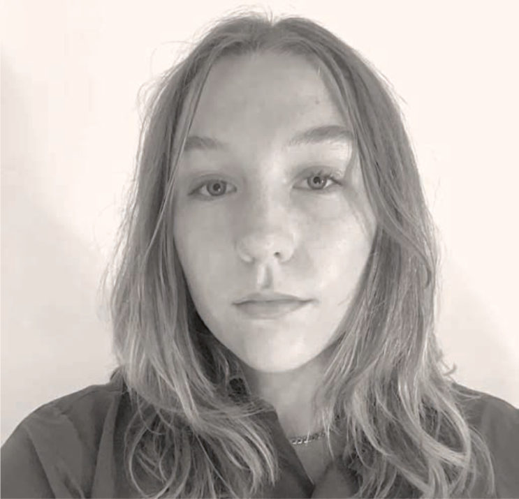
När ekonomikommentatorn Andreas Cervenka i en krönika i Aftonbladet frågade varför unga inte var argare över de kriser som drabbat dem – svarade studenten Stella Arenius, 22. Hon höll inte med.
"Att läget är illa, det sätter Cervenka själv huvudet på spiken på. Det han däremot har fått totalt om bakfoten är unga människors respons på dessa kriser. Han menar på att vi borde vara argare, men det han inte ser är att det vi alla går runt och bär på, likt blytunga ok på våra axlar, är sorg. Jag tycker dessutom att vi är ganska arga, men att det inte har löst särskilt mycket.”
Stella tillhör Generation Z – de födda mellan 1995 och 2010 - en generation som aldrig upplevt en tid utan kris. Flyktingkrisen. Klimatkrisen. Trump. Pandemin. Kriget i Ukraina. Inflation och bostadsbrist. Psykisk ohälsa. Många unga stänger av – slutar läsa nyheter, fastnar i vardagens distraktioner, försöker leva som om morgondagen inte finns. En del protesterar. Men vad förändras?
"Det nästan mest skrämmande är hur avtrubbade vi blir."
Generation Z har inte ens hunnit in i vuxenvärlden innan den tyngts av framtidsångest. Stellas egen strategi är att försöka hålla fast vid mening: studier, engagemang, små vardagliga val. Men hon ställer också en annan, större fråga: Varför är det vi som förväntas lösa allt?
"Det vi behöver nu är att de som har resurser tar ansvar."
Att skaffa barn känns för många i Generation Z som ett existentiellt beslut på ett sätt det aldrig gjort för tidigare generationer. När Stella läser rapporter om att golfströmmen kan kollapsa 2050 börjar hon fråga sig: Är det ens etiskt att föra barn in i den här världen?
Hon är inte ensam. Stella är en röst i en växande insikt: Transformation är inte bara något vi analyserar – den känns. Den känns i kroppen, i framtidsoron, i tystnaden, i uppgivenheten. Det var genom den typen av känslor i kroppen, som vi insåg att vi behövde skriva den här boken.
Introduktion och definitioner, s. 10
Träfiguren som väckte fråga på fråga på fråga
Lisa Carlgren,RISE
Under en road trip i USA 2024 reste jag några dagar genom Navajo nation i Arizona, ett urfolksreservat i öknen. Det var en omskakande upplevelse. Jag såg stolthet, genom en ung guide som delade berättelser om sin vardag. Fattigdom, genom en skylt på en stolpe som tipsade om solceller ”för er som inte heller har elektricitet”, och den tandlösa kvinna som visade dinosauriespår på en blåsig slätt. Ilska, genom graffitti, ”Hyran är försenad, ge oss vårt land tillbaka”.
Ett hotell jag bodde på ägdes av Diné (som Navajofolket själva kallar sig), och de hade en stor utställningslokal och en presentbutik. Där fanns alltifrån dyr genomarbetad Dinékonst till plastskräp från Kina. Ett objekt stack ut i mängden, en träfigur snidad av Harry Benally. Jag kom tillbaka flera gånger under två dagar, gick och vägde den i handen och ville så otroligt gärna ha den.
Men på något sätt kändes det inte rätt att köpa den. Det var som att jag skulle korsa någon gräns för vad som var ok. Men varför? Hade det koppling till priset, var det inte respektfullt i förhållande till konstnären? Var det någon slags kulturell appropriering? Vad var maktförhållandet mellan mig som turist, och konstnären? Varför skulle jag inte köpa hans konst när han valde att sälja den? Om jag hade hittat samma figur i Stockholm hade jag inte känt någon av de här känslorna. ”Ha! Kan du köpa den och bo i Majorna?” sa någon familjemedlem.
Någonstans i den här tankeprocessen insåg jag att när så här mycket tvetydighet ryms i ett objekt på 15 centimeter så finns en viktig historia. En historia kring komplexitet, system och normer. Kontrasten mellan skilda livsvillkor. Vad Dinés och andra grupper ur ursprungsbefolkningen råkat ut för genom historien och vad det kan lära oss. Beslut genom historien som orsakat osannolika kedjereaktioner. Våra skilda förhållningssätt till naturen, vilken slags kunskap som ges värde och hur den byggs. Träfiguren var också lockande att hålla i handen – kontrasten mellan hur len och hård figuren var på samma gång levandegjorde de här spänningarna ännu mer.
Givetvis köpte jag den. När jag senare med kollegor höll ett tal på tema systemisk transformation så illustrerade jag komplexitet genom delar av den här berättelsen.
Reaktionerna var blandade: några kände att det var drabbande och att de fick en känslomässig förståelse för temat. Andra tyckte att det var för flummigt för sammanhanget. Någon tyckte säkert att det var på tok för politiskt korrekt, även om jag inte hörde det sägas.
Det väckte nya frågor kring när en berättelse är på sin plats och inte, vilka budskap en publik är redo för och inte, vilka normer som styr, hur dessa skiftar och vad de gör med oss. Om man riskerar att tappa trovärdighet för att man kommer med ”fel” uttryck. Och hur själva tanken ”fel uttryck” är ett tecken på att vi är fast i ett gammalt system.
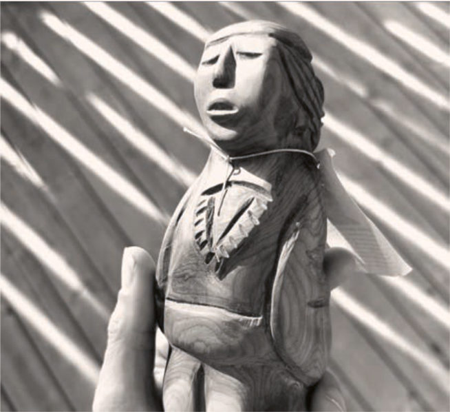
Introduktion och definitioner, s. 11
En chokladboll, fyra kronor och ett uppvaknande
Martin Mileros,forskare RISE
Det var år 2016, och jag gick in på ett bageri med min grabb. Han hade blivit lovad en chokladboll. När det var min tur att betala de 12 kronor som chokladbollen kostade, sa kassören: "Du kan köpa två chokladbollar för 20 kronor". Det lät som ett ganska bra erbjudande, men jag log och sa artigt att en chokladboll skulle räcka för grabben. Kassören var dock envis och sa: "Varför vill du inte köpa två? Du sparar fyra kronor!"
Jag blev lite förvirrad, men tackade artigt nej igen. Jag betalade till slut och vi lämnade butiken med en chokladboll.
Men när vi gick därifrån kunde jag inte sluta tänka på kassörens kommentar. Sparade jag verkligen fyra kronor, eller förlorade jag åtta? Om jag köpte en chokladboll så skulle jag gå därifrån med 12 kronor mindre, men om jag köpte två så skulle jag ju därifrån med 20 kronor mindre, eller hur? Jag var inte helt säker på hur jag skulle tänka kring detta ”sparande” eller utvärderingen av den andra chokladbollen, och plötsligt kändes allt mer komplicerat än det borde ha varit.
Denna enkla händelsen på bageriet väckte en tanke hos mig om alla ”dolda” kostnader (det vill säga andra än ekonomiska kostnader) som vi stöter på i vardagen. Det fick mig att börja fundera på en liknande situation i det digitala samhället, särskilt på sociala medier. Gör användare som du och jag verkligen en bra affär när vi använder ”gratis” appar, eller finns det mer att upptäcka?
Den där lilla incidenten på bageriet, som vid första anblick verkade obetydlig, blev startpunkten för mitt utforskande och min avhandling* med fokus på människors välmående och de dolda kostnader som de möter inom vårt digitala samhälle.
Introduktion och definitioner, s. 12
Nej men morfar, vi kan inte gå och fiska. Jag är vegetarian!
Nina Bozic, senior forskare RISE
Jag lär mig extremt mycket av min dotter som är tio år gammal. Det är hon som på något sätt är lärare för hela familjen genom att hon lyfter upp så många viktiga frågor. Hon var först med att bli vegetarian. Hon var först med att kräva att vi skulle börja köpa kläder från secondhand. Hon var den första som ifrågasatte när vi tänkte på spännande resor och ville åka iväg långt. "Nej, vi kan inte flyga mer. Vi har redan rest för mycket."
Det är sorgligt att barnen som är så unga redan tänker på det här sättet - hon började redan när hon var sju. Å ena sidan blev jag jätteledsen när jag hörde henne, för jag kände herregud, vilken börda bär hon på? Hon är bara sju år och uppmuntrar alla i familjen att tänka på att förändra sina beteenden.
Å andra sidan tänkte jag att det är en fin inbjudan till oss alla att börja lära ihop.
Nu ser jag det som en gemensam läranderesa där hon inspirerar oss, och påverkar mig att ta initiativ. Jag tittar till exempel på olika dokumentärfilmer eller framtidsvisionsfilmer med henne för att diskutera vad vi kan göra som mänsklighet, för att förändra.
Idag saknar vi ofta hopp, just för att vi är exponerade för så mycket dystopi och dystopiska berättelser. Vi vet att vi kan utrota oss själva och det kan bli ganska desperat om man hamnar i de tankarna. Så det vi behöver är att skapa nya utopier eller visioner för en bättre framtid. Jag tittade just den här veckan på den fina filmen "2040" som en pappa gjorde till sin dotter för att visa att om vi bara skulle använda den teknik som redan finns och skala upp användningen, så skulle världen se helt annorlunda 2040 - och det med en mycket mer positiv vision.
Vi som är föräldrar idag kan inte fastna i de här dystopierna och bli depressiva eller inaktiva –vi har ett ansvar gentemot våra egna barn, om inte annat.
Jag tror därför att att det här intergenerationella lärandet är extremt viktigt - att skapa dialog och samarbete mellan olika generationer.
Jag bjuder numera avsiktligt in min pappa och mamma för att tillsammans med min dotter skapa sådana utforskanderesor.
Min pappa älskar exempelvis naturen och miljön, och han har alltid har seglat. Men han är också van att fiska. Så han är i naturen, men han utnyttjar resurserna. Då står min dotter där och säger "Nej, men morfar, vi kan inte gå och fiska, jag är vegetarian, så jag äter inte fisk”. Vi måste hjälpa havet att regenerera sig i stället för att bara utnyttja resurser hela tiden.
Att skapa den dialogen mellan olika generationer är så viktigt, både i våra egna mikromiljöer och i en större skala.
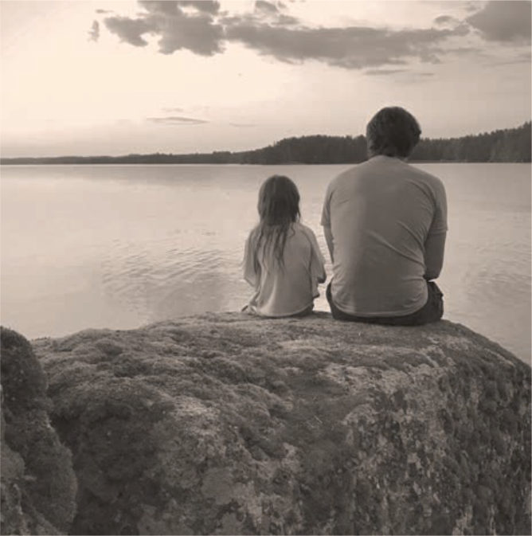
Introduktion och definitioner, s. 13
– Mamma, vi bävar för det arbetsliv (och liv) som ska bli vårt
Katarina Pietrzak, RISE
När jag var ung sa alla att jag var så målmedveten, jag marscherade framåt som på en snitslad bana och utifrån såg det säkert ut som att jag hade stenkoll. Men alla som såg mig och sa så, hade fel. Jag var inte målmedveten, men däremot (överdrivet) ambitiös. Och med de ambitionerna kunde man i min uppväxt trampa fram och lita på att vägen därmed föll tillrätta steg för steg.
Vi är alla vilsna som unga. Vem är jag, var kommer jag ifrån, vem ska jag bli? Jag kunde hantera all min osäkerhet genom att sätta den ena foten framför den andra. Och det mesta föll ju på plats.
Idag är jag mamma till tre döttrar, och den vilsenhet jag själv kände är så amplifierad att stigen inte kan skönjas och ingen vet riktigt åt vilket håll de ens ska blicka.
Mina döttrar vet inte vilka de är eller har en chans att bli. De ser på oss som gått före och undrar vad det egentligen är som driver oss och hur vi egentligen hanterar det som pågår på planeten, i världen, i samhället runt oss.
Algoritmerna programmerar för första gången om vår kulturella evolution, den som enligt forskare på flera sätt påverkar oss mer än den genetiska. Det har den alltid gjort, men den har byggts av oss människor och våra tankar, beslut och drömmar. Fram tills nu. Nu vet vi inte hur den byggs än, vi lämnar på många sätt just nu över vår framtid till algoritmer och teknik utan att riktigt vara medvetna om hur eller vilka konsekvenser det kan få. Vi kommunicerar på helt nya sätt sen internets inträde i våra liv och det har påverkat ungefär allt vi ser och är med om i vår vardag. Vi ser inte att det hänger ihop med stora världspolitiska händelser, men vi känner det. Vi känner ”den känslan”.
När mina döttrar frågar om de duger och har en plats i ett framtida samhälle, vad de ska satsa på för val i livet, vilka utbildningar de ska gå för att kunna försörja sig, om musiken de lever för alls kommer fortsätta bygga oss som människor– så kan jag inte leverera samma tvärsäkra svar som vi fick. Jag kan inte ens lova att kommer kunna leva i nån slags säkerhet framåt. Det är så mycket svårare att säga ”det är klart det ordnar sig” nu. Vi vet inte, och vi känner alla skavet. Hur ska allt det vi hittills byggt upp, räcka till nu? Vilka blir vi nu? Den känslan leder så lätt till uppgivenhet och polarisering, när vi så väl behöver just den lilla gnistan som kan börja bygga det nya samhälle vi har behov av. Den lilla, eller stora förändring som ger agens, hopp och en känsla av mening.
Men den känslan föder också en längtan efter meningsfullhet igen. Den föder även hoppet att vi kan. Vi kan, i det lilla som kan bli det stora. Om vi gör det tillsammans. Och det, är vad jag nu försöker ge mina barn till svar. Vi får utforska och fortsätta gå på de små stegens stig. Tillsammans.
"Jag har under många år arbetat med framtids- och omvärldsanalys, men något har förändrats. De verktyg vi tidigare använde för att skapa scenarier och förutse framtiden fungerar inte längre.
Sedan 2016, med händelser som Trump, Brexit, pandemin och kriget i Ukraina, har de stabila mönstren vi byggde våra analyser på helt brutit samman. Vi befinner oss nu i en tid av samhällstransformation där gamla system inte längre håller, och vi måste tänka annorlunda”.
P A Martin Börjesson, senior forskare, RISE
Vad är det som händer?
Salt Tech – teknik för transformation och demokrati

William Asefaw, ung entreprenör Örebro
När teknik utvecklas i nära relation till verkliga behov och lokala sammanhang, kan den bli ett avgörande verktyg i omställningen mot en mer rättvis och hållbar värld. Innovation handlar då inte om nya produkter i sig, utan om nya möjligheter för människor att leva, arbeta och känna sig trygga – även där systemen brister.
Salt Tech är ett exempel på detta. Det är en belysningslösning som drivs med hjälp av saltvatten, framtagen av William Asefaw i Örebro. Lamporna är tänkta att fungera i nödsituationer och i delar av världen där elektricitet är instabilt, dyrt eller obefintligt. Målet är att erbjuda en prisvärd, robust och miljövänlig lösning som inte förutsätter tillgång till elnät.
Idén föddes under en resa till Kenya och Eritrea, där William såg hur gatubelysning släcks tidigt på kvällen och där strömavbrott ofta förlamar vardagen. Upplevelsen av mörker och utsatthet blev en drivkraft för innovation: kan man skapa ljus med hjälp av det som redan finns – som vatten och salt?
Tillsammans med sin bror började William utveckla prototyper som idag är under patentskydd. Tekniken bygger på elektrolyter och kemisk reaktion mellan salt och vatten.
På så vis skapas ljus som kan användas oberoende av extern elförsörjning – något som kan spela en avgörande roll i humanitära insatser, i utsatta områden eller i klimatrelaterade kriser.
Genom stöd från innovationsmiljöer och genom priser och stipendier från bland annat XO Foundation och familjen Spendrup, har William också fått tillgång till verktyg, handledare och tekniskt kunnande inom exempelvis CAD, 3D-design och produktutveckling. I detta möte mellan idé, teknik och lokal infrastruktur har något tagit form – inte bara en lösning, utan en framtidsriktad förmåga att tänka nytt där behoven är störst.
Salt Tech visar att omställning inte bara handlar om stora systemskiften, utan också om unga människors vilja att förändra världen – en lampa i taget.
Från havets botten till byggbranschens framtid
När teknik utvecklas i samklang med naturen och i syfte att lösa verkliga samhällsutmaningar, kan den bli en katalysator för hållbar transformation. Alga Insulation är ett exempel på detta – ett företag som omvandlar alger och tång, ofta betraktade som avfall, till miljövänligt isoleringsmaterial för byggbranschen.
Företaget är grundat av 20-åriga Janna Naser under hennes gymnasietid i Örebro. Sen dess har Alga Insulation vuxit från en idé inom Ung Företagsamhet till ett lovande företag med ambitionen att revolutionera hela byggindustrin. Genom att använda alger som råmaterial adresserar företaget både problemet med övergödning i haven och behovet av hållbara byggmaterial.
Janna har mottagit flera utmärkelser för sitt arbete, inklusive Anders Walls Ung Företagsamhets-stipendium och Frodas stipendium "Framtidens kvinnliga företagare”. Dessa erkännanden har möjliggjort vidare forskning och utveckling i samarbete med forskare på RISE, med målet att lansera produkten på marknaden inom två år.
Alga Insulation exemplifierar hur unga entreprenörer kan driva systemförändring genom att kombinera vetenskaplig kunskap med ett starkt engagemang för hållbarhet. Genom att förvandla ett miljöproblem till en resurs visar företaget vägen mot en mer cirkulär och hållbar framtid.

Janna Naser, ung entreprenör Götborg
En ny logik för en värld i förändring
En ny logik för en värld i förändring, s. 82
System som hindrar cirkulär omställning
Cirkulär transformation handlar om att lämna en filosofi där man utnyttjar planeten genom att gräva upp, använda och slänga material, för en där man fokuserar på att återvinna och återbruka material och produkter så långt det går.
Men det kan vara svårt för ett företag som gör stora vinster i det gamla systemet att överge sin affärsmodell till förmån till något där roller, nya marknader och intäktsmöjligheter är oklara, och där få av systemets nya pusselbitar finns på plats.
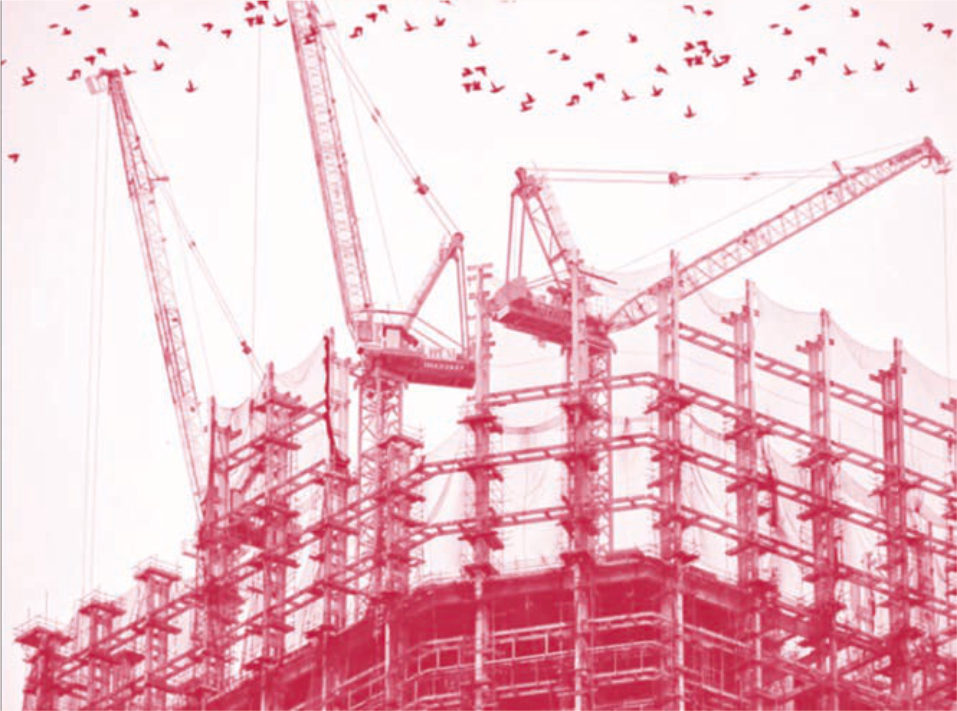
Det kan också handla om en kortsiktig syn på värdeskapande, intäkter och utgifter, där ett specifikt årligt vinstmål eller en redan slimmad budgetkostym blir viktigare att uppnå, än att se på det värde man kan skapa över tid med ett annat sätt att tänka. Ett där det kanske finns större vinster om man bara har tålamod.
Få politiker och företagsägare har mod tänka nytt kring vinster och kostnader där planetens välbefinnande och gränser räknas in. Om det gjordes skulle inte en ny dörr på Bauhaus kosta 400 kr medan en återbrukad kostar det mångdubbla - förutom allt extra tid och krångel som krävs för hanteringen av en sådan. Men när ingen är beredd att betala, är det svårt att vara föregångare.
Om man ser på instanser som skola, hälso-sjukvård, polisen och andra myndigheter där new public managementlogiken och det filosofen Jonna Bornemark kallar förpappring brett ut sig, så är det svårt att släppa idén om kontroll och detaljer. Det har då blivit en del av ryggraden i systemet – även om alla ser att orimlig tid går åt till att fylla i dokument eller att själva filosofin förhindrar reflektion, kunskapsutveckling och fördjupade relationer. Där värderingsdrivna medarbetare med djup passion för sitt yrke och expertis om vad som är viktigt - inte får vara autonoma eller lägga kraften där de ser att den bäst behövs.
Vem vågar börja nedmontera det som är skadligt men som sitter i väggarna nästan överallt?
Människan i transformation
Människan i transformation, s. 111
Relationsfokus i tidiga faser av cirkulär transformation
I det Vinnova-finansierade projektet Prototypa Digitala Cirkulära Affärsekosystem (PDCA,) utforskades den tidiga fasen av att bilda cirkulära affärsekosystem i ett faciliterat samarbete mellan tre stora aktörer inom systemet.
I en så här tidig fasen är i princip allting luddigt – det finns inga branschöverenskommelser, standarder för informationsdelning och ansvarsfördelning, ingen logistisk infrastruktur, ingen marknadsplats. Dessutom är nyproducerade byggelement eller material både billigare att köpa in och enklare att hantera enligt den gamla logiken, så i övergångsskedet måste det finnas andra incitament. Att gå från en linjär till en cirkulär affärsmodell kan strida mot hela den logik ens företag bygger på, och man måste kanske överge den affärsmodell man idag tjänar pengar på.
De pionjärer som engagerade sig i projektet kämpade därför mot oförståelse eller ovilja. De var också beroende av samlärande och att utforska möjligheter ihop med andra aktörer. Detta behövde också ske på ett trevande sätt där man delar kunskap, testar idéer och partnerskap, utan att veta vem som kommer vara en stark aktör (eller ens finnas) i det nya systemet. Flera var pressade av sina egna organisationer.
För att kunna få till både ett öppet utforskande och möjliga framtida partnerskap, låg fokus på att bygga upp förtroende, upprätthålla engagemang och skapa ett tryggt och kreativt utrymme för gemensamt lärande, utbyte av perspektiv och ärlig dialog.
Under de 18 månader som projektet pågick så var processen framför allt social och relationell, och det var viktigt att de som faciliterade tog hänsyn till denna dynamik. Att spela med öppna kort och släppa sitt eget fasta fokus i ett tidigt skede sågs som avgörande för att uppnå ömsesidigt förtroende. Samtidigt var alla deltagare medvetna om sina respektive intressen av att hitta möjligheter för de egna företagen, utöver de potentiella möjligheter som fanns i framtida samarbeten. Det var inte otänkbart att aktörerna kunde komma att konkurrera om samma roll i det framtida systemet. Därför var det viktigt att skapa förtroende och en respektfull balans.
Mot slutet kunde deltagarna dela med sig av ärliga frustrationer relaterade till cirkulär omvandling i sina företag och ge varandra råd om hur man kunde hantera dessa. Flera uttryckte vikten av den här relationsskapande delen av utforskande faser och hur den ofta glöms bort helt, både praktiskt och i forskning om cirkulär transformation. Att springa rakt på den konkreta bollen för att jaga möjligheter kan skapa otålighet och missförstånd, - och missade möjligheter.
BTS ARMY: Kollektiv omtanke - när fanskaran blir en förändringskraft
BTS (방탄소년단Bangtan Sonyeondan) är en sydkoreansk musikgrupp som sedan starten 2013 vuxit till ett globalt fenomen. Genom känsloladdade texter, inkluderande budskap och stark närvaro i sociala medier, har de byggt en nära och lojal relation till sin publik. Fansen, kallade ARMY (”Adorable Representative M.C. for Youth”, uppskattade till mellan 50 och 80 miljoner medlemmar), är idag mer än ett fan-community – de är en global, mångfacetterad rörelse som spänner över generationer, språk och nationella gränser.
I en digital värld där många upplever internet som hårt, tomt, ytligt eller splittrande, har ARMY format något annat: en gemenskap präglad av omsorg, tillhörighet och emotionellt stöd.
Genom sociala medier har de samskapat ett mjukare rum online, där det är tillåtet att visa känslor, uttrycka uppskattning och stå upp för varandra. Genom omsorgsfulla interaktioner, delade normer och viljan att lyfta varandra, visar ARMY hur digitala rum kan bli platser där omtanke blir handling, och gemenskap ett aktivt val.
ARMY har också utvecklat en förmåga till självorganisering. När BTS donerade en miljon dollar till Black Lives Matter 2020, tog det bara 25 timmar för fanskaran ARMY att samla in lika mycket genom kampanjen #MatchAMillion – utan någon uppmaning från själva bandet. Initiativet koordinerades av det frivilliga nätverket One In An ARMY, som tillhandahöll tydliga mål, delningsbart material och enkla verktyg för deltagande.
Forskare har nyligen visat hur ARMYs struktur liknar ett livskraftigt system, där olika roller – som översättare, kampanj-konton och medieproducenter – samverkar utan central styrning, men med tydlig effektivitet. Den starka samhörigheten i nätverket bygger på att människor med liknande värderingar och intressen söker sig till varandra. Detta skapar hög tillit och snabb spridning av information över gränser.
ARMY är inte bara fans – de är en kulturell kraft. Deras organisering illustrerar en ny typ av global påverkan och kulturell sammanhållning, där digital infrastruktur, emotionell samhörighet och kollektiva handlingar samverkar. Det är ett exempel på hur förändring kan börja i det oväntade – men få kraft genom sammanhang där människor känner igen sig i varandra, där omtanke står i centrum och där kulturen bär på systempåverkande potential.
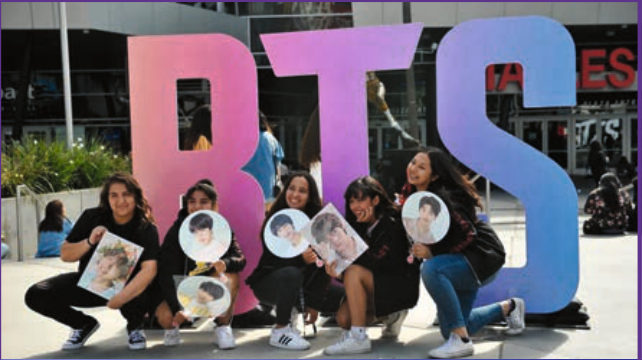
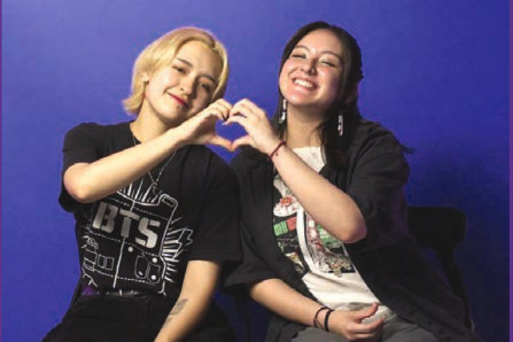
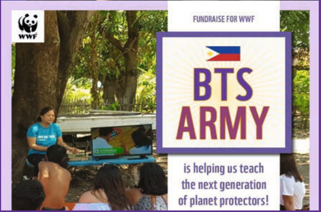
Människan i transformation, s. 115
”När vi pratade med en grupp unga ledare kring framtidens utmaningar, beskrev en deltagare hur hon kände sig fast mellan hopp och förtvivlan. Jag ser potentialen i vad vi kan åstadkomma, men ibland känns det som att vi bara springer runt i cirklar.
Det vi behöver är fler platser där vi kan prata om detta – där det inte handlar om att hitta lösningen direkt, utan om att förstå och
bearbeta vad vi står inför. Det blev en påminnelse om vikten av samtal som inte bara är praktiska, utan också känslomässiga och reflekterande."
Transformation som hantverk
Transformation som hantverk, s. 120
"En organisation som fastnat i interna silos misslyckades med att möta externa utmaningar. Genom att bryta ner dessa barriärer och arbeta med ett helhetsperspektiv skapades en dynamik som gjorde dem mer anpassningsbara. Att våga se helheten är nyckeln till att övervinna organisatoriska utmaningar."
"I ett projekt [om hälso-sjukvård] definierade vi hälsa som något som går bortom medicinska faktorer – det handlar även om socialt välbefinnande och mental balans. Detta ledde till utvecklingen av en modell som fokuserade på förebyggande insatser och långsiktigt välmående. Genom ett holistiskt synsätt på hälsa kan vi skapa bättre och mer hållbara lösningar."
Transformation som hantverk, s. 123
”Vuxen-normen” desillusionerar ungdomsrörelsen
Ungdomsrörelsen är en engagemangsplattform som står för en enorm förändringskraft i samhället, när det gäller demokrati, utanförskap, och hållbarhet. Den bidrar till att utveckla ledarskaps- och kommunikationsförmågor och tillvarata engagemang bland unga. En majoritet av våra topp-politiker har också en bakgrund inom ungdomsrörelsen. Trots den här potentialen kämpar unga ledare mot en ”vuxennorm” där insiktsfulla, innovativa och lösningsorienterade unga har svårt att bli tagna på allvar. Det har en demotiverande och destruktiv påverkan som får många att lämna sitt engagemang. Att jobba för och med att förändra den här skadliga normen skulle stärka samhällets transformationsförmåga.
Transformation som hantverk, s. 123
”Raka-vägen-normen” bidrar till utanförskap
I ett projekt kring entreprenörskap bland unga i Värmland, försökte man (RISE) förstå faktorer som gör att unga hamnar i utanförskap. Det blev tydligt att det finns en “raka-vägen-norm” som innebär att vägen till ett lyckligt liv bygger på en lyckad skolgång, följt av jobb eller studier – och allra helst högre studier. Unga som kämpade i skolan möttes av budskapet att betygen de fick, skulle avgöra om de fick ett misslyckat liv där allt var förstört för alltid, och att de hade bara en chans.
I flera fall skapade det en sådan stress att eleverna valde att inte gå till skolan trots att de hade en tydlig yrkesambition. Det kunde också leda till sådan ångest inför sådant som prov, att de inte klarade av att visa allt de kunde i skolan. Samtidigt kunde vi se hur många unga bygger entreprenöriella förmågor på andra sätt – exempelvis genom att tillsammans med vänner bygga om en EPA-traktor och behöva ta till sig stora mängder kunskap om hur en bil fungerar. Eller genom att starta en kaninförening och lära sig om organisering. Att uppvärdera olika sätt att visa kunskap, och olika vägar till kunnande och lärande, skulle medföra att fler kände sig inkluderade och motiverade. Detta skulle både skapa och ge värde, även om det ibland skulle kunna innebära en “omväg”, genom att exempelvis gå om ett år, ta igen på komvux eller göra någon form av praktik.
"Vi lyssnar in medborgarnas perspektiv och försöker skapa en gemensam förståelse. Ett av våra projekt är 'Innanför ringleden’, och handlar om att omvandla tidigare huvudgator och större vägar i Umeå till mer tillgängliga och hållbara stadsrum. För att lyckas måste vi jobba nära medborgarna. Vi har bland annat stadsdelsdialoger där vi möter invånare på deras hemmaplan, istället för att bara bjuda in till möten i kommunhuset." - Mikael Brändström, Umeå kommun
Projektet "Innanför ringleden” i Umeå syftar till att omvandla bilberoende stadsrum till områden som prioriterar gång, cykel och kollektivtrafik. Genom stadsdelsdialoger möter kommunen invånare på deras hemmaplan, exempelvis utanför mataffärer eller bibliotek, för att skapa en öppen och inkluderande dialog. På så sätt säkerställs att invånarnas röster och perspektiv integreras i utvecklingsarbetet, vilket stärker den sociala hållbarheten och skapar en gemensam förståelse för förändringarna.
”Vi ser fantastiska resultat av hela vårt arbete, där deltagare kunnat minska eller helt sluta med medicinering, blivit mer självständiga och fått tillbaka livskvaliteten.” - Linda Löfqvist, Lidingö stad
Lidingö stad har bland annat utvecklat initiativ som klassmor- och farföräldrar, där äldre personer engageras i skolor för att skapa kontakt och gemenskap mellan generationer. De har också skapat annan verksamhet och byggt andra inkluderande initiativ för äldre. Detta bidrar till att stärka känslan av mening och välbefinnande hos både unga och äldre. För de äldre innebär det ett ökat socialt sammanhang och en känsla av att bidra, medan de unga får stöd och förebilder från äldre generationer. Dessa initiativ har visat sig ha positiva effekter på livskvalitet, oberoende och såväl fysisk som mental hälsa för de äldre deltagarna.
Transformation som hantverk, s. 143
När vi stör det magiska trädet
Låt barns berättande ta plats
Att uppmuntra barns och ungas berättande kan hjälpa dem att engagera sig i och förstå transformation, och är en form av intergenerationellt lärande. Den här berättelsen skrevs av 14-åriga Guro Kumar, kopplat till projektet ”Det Immersiva Biblioteket” (kap 8, sidan 29_2). Den hjälpte henne att sätta ord på det hon känner för sin omvärld._
Den magiska planeten Det här är en annan planet i en annan galax. En planet hundratals mil härifrån, så långt bort att du inte ens kan föreställa dig.
Denna planet bryter mot de naturlagar som vi har på jorden. Här så kommer inte fukten från havet eller vattnet, utan från träden. Det är träden som gör att grönskan kan växa och överleva, att det mest oskyldiga ogräs kan överleva.
Oavsett om en miljö på denna planet har tillgång till vatten eller inte så är det träden som ger liv. Alla träd ger energi och fukt, möjlighet till liv, men det är det enorma moderträdet som gör allt detta möjligt. Det är ett superstort redwood-träd som ger alla andra träd energi. Det har väldiga rötter som sträcker sig över hela planeten.
Man skulle kunna tro att det här är ett paradis i värmen och naturen, men under natten så sänks temperaturen något enormt. Alla djur och växter är helt anpassade till detta klimat. Evolutionen har gjort att allt nu kan leva oavsett temperatur. Blommorna stänger sig och djuren får tjockare päls.
Den förödande kejsaren För länge sedan var denna planet en fridfull plats. Utan konflikter eller problem. Alla levande och icke levande varelser levde i harmoni tillsammans. Från de högsta bergen mitt ute i oceanen bland vågor och vind, till de minsta små insekterna i de dimmiga träsken. Överallt var det frid och fröjd. Träden gav liv till allt och alla.
Man trodde att historien kunde få sluta så, men så plötsligt bara för några år sedan, kom det en främling till denna planet. Någon som inte var familjär med miljön. Det var en kejsare, van vid att allt och alla lydde honom. Så han reste ett stort tempel på det högsta berget för att säga: “Jag är bäst och störst, ingen kan klå mig”. Det var meningen med templet, och såklart tyckte han att det var skönt med tjänare och innebassänger med inbyggda discolampor.
Han trodde att han var väl förberedd för att flytta till denna nya planet. Men det var en sak han inte hade räknat med, temperaturen! Så när han flyttade dit blev all hans planering förgäves.
Han frös varje natt. I dagar och veckor. Oavsett hur många lager strumpor han hade eller antalet antika filtar, han frös.
Så efter exakt en månad och tolv dagar så började han hugga ner skogen i hopp om att få sova om nätterna. Han visste inte att det skulle störa ekosystemet. Långsamt blev de gräsfyllda vidderna och bergen till en öken. Torrt, utan ett tecken på minsta lilla liv. Alla möjligheter för att liv skulle kunna överleva, försvann.
Kejsaren hade till och med skurit sönder moderrötterna i hopp om att det skulle brinna bättre. Den förödande öknen sträckte sig nu från kejsarens palats och över hela planeten och började långsamt närma sig moderträdet. Dag efter dag så blev öknen större och den levande naturen mindre.
Det hade blivit ett hot mot planeten och ekosystemet. Om kejsaren i vår berättelse fortsätter att hugga ner alla träd och använda dem som bränsle, så kommer planeten som en gång lyste upp universum, att dö.
Den här typen av berättelse kan öppna upp för en mängd olika samtal om samhällskritik– och om vad som är viktigt och etiskt, och hur man kan jobba för att undvika en sådan här situation. Genom den här berättelsen kan vi se vad vår 14-åriga skribent har för förståelse och vad hon oroar sig för.
Transformation som hantverk, s. 149
Vem tjänar på din uppmärksamhet?
Osynliga villkor kräver nya begrepp
Exempel begreppet användardriven dataekonomi: Traditionella perspektiv har ofta betraktat konsumenter som passiva mottagare av varor och tjänster. Utvecklingen av sociala medier har dock förändrat detta synsätt. Idag deltar användare aktivt i att skapa, dela och forma innehåll, vilket har möjliggjort framväxten av en användardriven dataekonomi. Här är individer inte bara konsumenter, utan även producenter av värde, exempelvis genom att bidra med personlig data och engagemang.
Sociala medier erbjuder "gratis" tjänster där användare betalar med sin tid, sin uppmärksamhet och sina personliga data istället för pengar. Dessa resurser är avgörande för sociala medieplattformarnas affärsmodeller och har gjort att individer blivit centrala aktörer inom plattformsekosystemen. För att förstå och analysera dessa förändringar krävs att vi identifierar nya begrepp och tydligt definierar dem.
Begrepp som "användardriven dataekonomi" och "nollprisanvändare" hjälper oss att belysa hur makt och värdeskapande fördelas i den digitala ekonomin.
à Digitala system kan hålla kvar makten genom att dölja hur data används – och gör det svårt för användare att ta kontroll.
_(Läs mer i Martin Mileros avhandling https://liu.diva-portal.org/smash/record.jsf?pid=diva2%3A1941404&dswid=2241)_
Transformation som hantverk, s. 151
Exempel: Kryssningsfartyg, expedition och snabbspår
Karin Lycke, innovationsledare på Kungsbacka Kommun, berättar:
”Vi började använda språk mer medvetet när vi tog fram en modell för förnyelse och missionsdriven innovation i offentlig sektor. Vi ville hitta ord som kunde skapa energi, inte bara beskriva processer. Metaforer blev ett verktyg för att hjälpa andra att förstå – och vilja vara med.
Ett exempel är expeditionen. Vi ser kärnverksamheten som ett tryggt kryssningsfartyg – men ibland måste vi lämna det och ge oss ut i okänt vatten, på en expedition. Vi söker, provar, hittar nya vägar – och dockar sedan tillbaka med det vi lärt oss.
Men alla utmaningar kräver inte en expedition. Därför utvecklade vi också “snabbspåret” – en ingång där vi kan identifiera om någon annan redan har löst ett liknande problem. Det är lockande att ta “snabbspåret”, men för att få göra det måste man svara på ett antal frågor. Hur stort är problemet? Vem upplever eller äger det? Har någon redan testat en lösning? Vi kallar det att “glo och sno”. Det handlar inte om att kopiera slentrianmässigt, utan om att lära smart – och hållbart.
Vi behöver tänka på att det vi skapar ska kunna användas av andra i nya sammanhang. Det kräver tid för att berätta vad man faktiskt har gjort. Och det kräver ett språk som gör det begripligt. För mig handlar det om att skapa berättelser och begrepp som både håller i praktiken och väcker engagemang. Språket är inte bara ett verktyg för att förklara – det formar hur vi ser på allt vi gör.
Exempel: bildspråk som formar arbetssätt
Exempel: På IBM gjorde man en resa i kulturell transformation under ett antal år. Man ville medvetet gå från en ingenjörstung arbetskraft och kultur, till en som var mer designinriktad och agil. Som del i detta skapade man ett eget designspråk med metaforer som var unika för IBM – här ville man knyta an till IBMs unika logotyp och hur den tagits fram decennier tidigare.
Istället för att prata om sånt som delmål och kundundersökningar, så myntade man bland annat begrepp som ”hill” - berget man ser framför sig på vägen. Man tog även fram grafiska ikoner för detta, samt givna format och frågeställningar som distribuerade team kunde samsas om och arbeta med i exempelvis en sprint på sex veckor. ”Playback” var ett annat begrepp – som illustrerar ett tillfälle där man delar berättelser från kundinteraktioner, med fokus på att det verkligen handlar om djupare intryck, inte bara på lösryckta insikter. ”The loop” – blev IBMs egen tolkning av metoden design thinking, där hills och playbacks ingår.
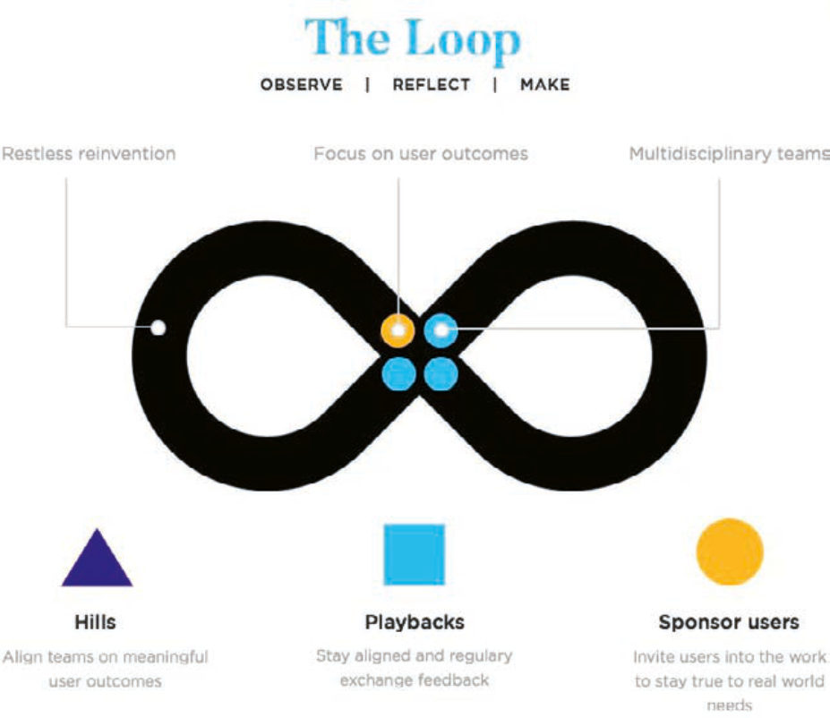
Språk bär kultur
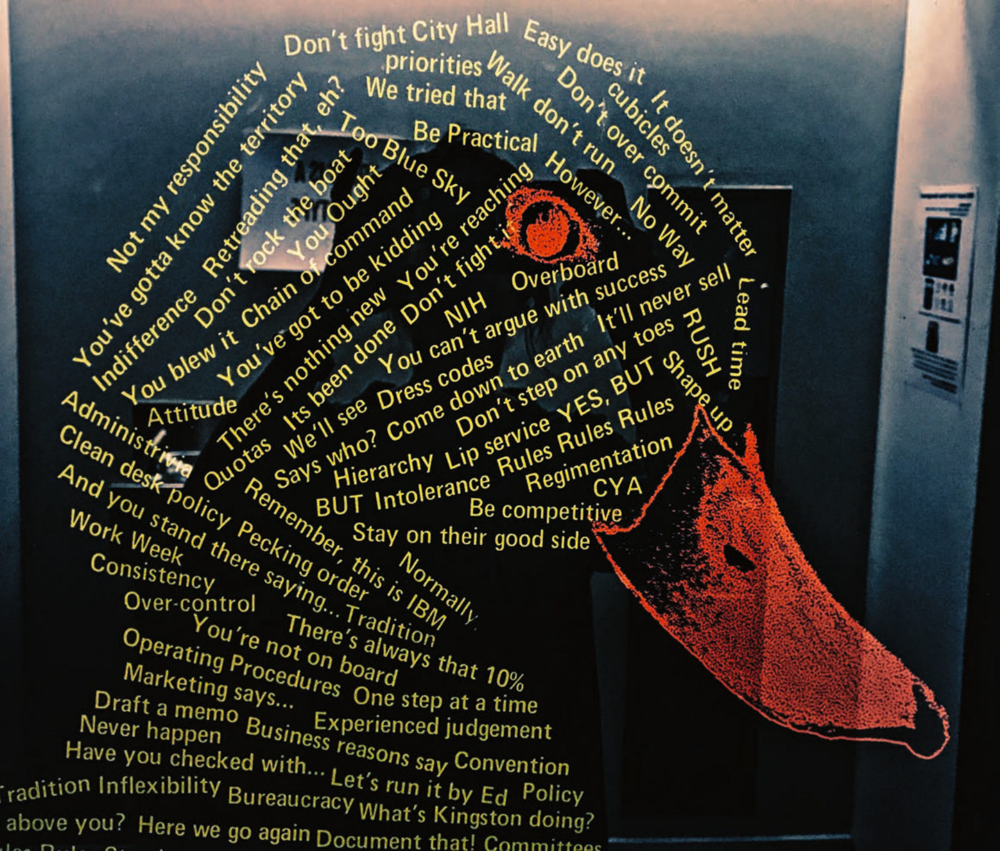
Den här illustrationen är målad på en glasvägg på IBMs kontor i Austin, Texas. Bredvid kan man läsa ett citat av Nobelpristagaren G.B. Shaw:
”The reasonable man adapts himself to the world. The unreasonable man persists in trying to adapt the world to himself. Therefore all progress depends upon the unreasonable man.”
IBM skiljer på “tama ankor” (de som gör som de blir tillsagda) och “vilda ankor” (kreativa nytänkare) – och låter de vilda ankorna vara, istället för att försöka tämja dem.
Bilder, metaforer, ord, och hur dessa får ta plats i rummet, är en påminnelse om att kultur är något vi skapar tillsammans. Hur vi pratar och vilka ord vi använder spelar roll. Vi kan välja hur vi väljer att fylla eller tämja vår anka.
Att driva transformationsprocesser i praktiken
Att driva transformationsprocesser i praktiken, s. 167
Exempel: rörligt fokus i en öppen innovationskontext
Vi har tidigare nämnt forskningsprojektet om cirkulär transformation inom byggbranschen som byggde på designmetodik, där en iterativ framväxande process är central.
Under projektets gång jobbade vi aktivt med perspektivtagande och att navigera föränderliga mål. Målen handlade både om vart deltagarna ville, vad de ville uppnå – men också om HUR projektet skulle genomföras och vad man skulle fokusera på i gemensamma aktiviteter.
En av de första aktiviteterna handlade om att försöka förstå hur de olika deltagarna såg på målbilden, både gällande slutresultat och processen för att nå dit. Hur tänkte man sig komma fram till tydliga affärsmodeller? Hur såg man på att experimentera mer hypotetiskt; att skapa gemensamma framtida erbjudanden eller att använda konstellationen för samlärande, utan att nödvändigtvis fortsätta jobba ihop efteråt. Bilderna skilde sig mycket åt.
Projektet hette ”Prototypa digitala cirkulära affärsekosystem”, så det fanns en tanke om att lägga mycket tid på att jobba konkret och fysiskt. Det fanns också en tanke om att lägga ungefär halva tiden på det som pågick mellan organisationerna, och att de skulle stötta varandra med interna frågor genom att dela inspiration.
Men - som de andra exemplen från samma projekt visat, så var komplexiteten och otydligheten långt mycket större än forskarna insett. Man förstod heller inte hur ”tidigt” i ekosystemsformerings-processen man befann sig, på alla nivåer. Såväl inom hela projektets gemensamma system. som inom varje deltagande organisations eget.
Vid projektets slut när vi började teoretisera kring vad som egentligen hänt kopplat till designteori, såg vi att projektets aktiviteter och fokus egentligen rört sig mellan ett antal ytterligheter. Att tydliggöra dessa gav många idéer för hur man i framtida projekt med den här medvetenheten kan tänka annorlunda kring både facilitering och workshop-upplägg.
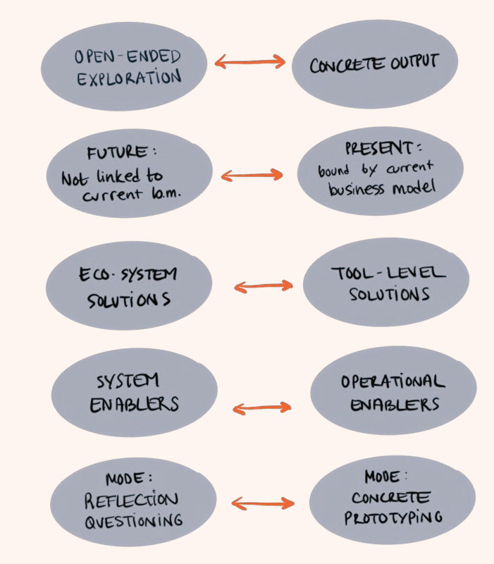
Att driva transformationsprocesser i praktiken, s. 174
Exempel på möjlighetsfickor
Rätt förutsättningar skapade oväntat pilotprojekt:
Det Vinnova-finansierade forskningsprojektet ”Prototypa Digitala Cirkulära Affärsekosystem”, fungerade i sig självt som en möjlighetsficka. Aktörer från tre företag fick utforska designinspirerade sätt att arbeta och samarbeta inom sitt ekosystem, samt att ta fram framtidsprototyper av nya ekosystem.
Utanför projektet var det svårt för deltagarna att hitta en arena för sådan samverkan, men genom forskningsprojektets struktur och legitimitet kunde de engagera sig i ett öppet utforskande, trots att deltagandet inte gav någon direkt ekonomisk ersättning.
Men denna möjlighetsficka gav i sin tur upphov till nya fickor. Halvvägs in i projektet gick deltagarna igenom en fas av friktion och frustration – en "desperationens dal" där olikheter och osäkerheter blev tydliga. Det var genom att hantera denna friktion som en mer ärlig och djupgående dialog kunde uppstå kring vad som faktiskt var viktigast. Detta ledde till omprövning av vissa lärdomar och insikter, och när förutsättningarna föll på plats fick aktörerna energi att göra något oplanerat men kraftfullt – de tog initiativ till ett nytt helt oplanerat pilotprojekt.
Detta illustrerar hur transformation sällan sker linjärt eller enligt en förutbestämd plan. Istället kan spänning och motstånd bli en katalysator för förändring, när det finns tillräckligt med tillit och engagemang för att ta nästa steg.
Själva pilotprojektet var ett samarbetsinitiativ där företagen testade de praktiska processerna för att få till ett cirkulärt arbetssätt, med fokus på materialåtervinning och digital spårbarhet inom byggsektorn.
Möjligheten uppkom när ett av de deltagande företagen bjöd in de andra i att omvandla en lokal i en befintlig kontorsbyggnad, ett projekt som var ”lagom” för ett test i liten skala: lagom storlek, tidsram, logistisk komplexitet, ytor för att prototypa lagring och lagning, lagom risk.
En tydlig lärdom var att ”djävulen sitter i detaljerna”, och man stötte på en mängd situationer som inte hade gått att förutse utan ett skarpt test – sånt som hur den nya processen krockade med (och behövde docka in i) de krav på dokumentation som fungerade som grindar i företagets interna projektprocess.
En vändning och nya möjligheter kom med en ny deltagare som introducerades i projektet – en nyanställd på ett av de andra företagen, en person med en helt annan professionell bakgrund. Hans nyfikenhet på en specifik teknologi och hans tidigare kontakter, gav företaget möjlighet att testa saker som annars inte hade varit möjliga.
Genom pilotprojektet kunde de också uppleva var nånstans nya typer av friktion kunde uppstå, och se hur detta utmanade deras syn på sin roll i ekosystemet. De fick ompröva vilket ansvar de kunde – och ville – ta i den framväxande cirkulära ekonomin. De insåg också att de ganska snart kom till en gräns där de behövde blanda in sina juridiska avdelningar trots att de bara testade i liten skala i ett pilotprojekt.
Att få med tidiga följare i en kulturförändring
Virginia Hamilton, design-utbildare, policyexpert och systemledare inom arbetsmarknadsområdet, har arbetat på både delstatlig och federal nivå inom Department of Labor (arbetsmarknadsdepartementet) i USA i över 40 år. Hennes ambition de senaste drygt 15 åren har varit att införa ett mer människo-centrerat designperspektiv (design thinking) hos första linjens personal inom arbetsmarknadsfrågor, t ex arbetsförmedlingar och vuxenutbildning. Detta för att demokratisera innovation och säkerställa att tjänsterna verkligen fungerar för människor i utsatta situationer. Initiativet startade efter finanskrisen 2008, när många plötsligt befann sig i helt nya omständigheter i livet. Virginia delar några insikter om förändring genom att använda metaforen möjlighetsfickor:
"Jag tänker ofta på den adoptionskurva inom innovation, som funnits sedan 60-talet – den som talar om innovatörer, tidiga följare, majoriteten och eftersläntrare. Jag ser att den passar väldigt väl även i detta sammanhang. Det handlar om att nå brytpunkten. Genom att få med innovatörerna och de tidiga följarna, kan vi skapa dessa små möjlighetsfickor. När de lyckats, kan den tidiga majoriteten sen se att det de gjort, faktiskt fungerar. Små förändringar leder till nya förändringar – och ganska snart har hela kulturen förändrats. Teorin, och den empiriska forskning som stödjer den, visar att om du verkligen vill driva förändring behöver du bara nå 13 procent av dem du vill nå. När du väl kan visa att något fungerar kommer resten att följa. Det kan ta sex månader eller tre år, men de andra kommer sen att följa efter”.
Vi kan använda möjlighetsfickor på ett smart sätt – genom att skapa tidiga vinster som exempel, och sedan få med den tidiga majoriteten."
Att använda extern uppmärksamhet för att skapa legitimitet.
I den amerikanska vårdorganisationen Kaiser Permanente hade ett internt innovationsteam svårt att hitta finansiering för sitt arbete, trots sina framgångar med att skapa lösningar som vid implementering räddade liv (räknat i hundratal), minskade vårdskador och förbättrade patientupplevelsen.
Teamet uppmärksammades dock i artiklar i tidskrifter som FastCo och Harvard Business Review, samt i boken Change by Design av Tim Brown (en central bok i den tidiga design thinking-rörelsen). Eftersom teamet därmed fick erkännande utanför sin organisation så kunde de använda uppmärksamheten för att skapa legitimitet internt, och därmed säkra stöd och finansiering.
Arbeta med medvetna begränsningar
När en möjlighetsficka uppstår så kan det vara lockande att dyka djupt för att utforska. Carl Heath på RISE påminner om vikten av att medvetet forma och begränsa den tid och rum vi har för förnyelse:
“Parkinsons lag säger att arbete utvidgar sig för att fylla den tid som finns tillgänglig för dess slutförande. Fenomenet innebär att uppgifter tenderar att bli mer komplexa och tidskrävande än nödvändigt när tidsramen är generös, oavsett uppgiftens verkliga komplexitet. Genom att omfördela tid och skapa rum för transformation både i tid och plats, skapas möjligheter för lärande”.
När antagonister ser möjligheter i våra svagheter
"Inom brottsbekämpning och försvar är det inte bara de egna möjlighetsfickorna som är i fokus, där drivs arbetet också av hur en motståndare aktivt utnyttjar våra sårbarheter.
Begreppet innovation används ofta i ett sammanhang av utveckling och positiva effekter för oss själva och vårt samhälle. Vi tillskriver sällan en motståndare eller fiende rollen som innovationsledare. Men om man studerar organiserad brottslighet, statsfinansierad påverkan eller vad som sker i krig, så framträder tydliga komponenter av innovationsledningssystem.
Ett tankeexperiment kan därför vara att betrakta mostråndarens förmåga till innovationsledning, och utifrån det agera proaktivt i de delar där motståndaren inte har samma förmåga som vi har i vårt eget innovationsarbete. Det blir också ett sätt att stärka de resurser som ofta finns i ett demokratiskt och öppet innovationssystem.
Detta resonemang går för övrigt att utvidga till de globala ekonomiska och geopolitiska skeenden vi ser just nu. Då uppstår stora och nödvändiga frågeställningar om vilka spelregler vi vill ha och vilka värden vi vill stå upp för".
Hantera övergången: organisation och ledarskap
Hantera övergången: organisation och ledarskap, s. 218
Exempel: Byt riktning – skapa handlingsutrymme
”Varför fokuserar vi så intuitivt på resursfrågan, när något nytt och svårt skall utföras? Varför är inte den självklara
utgångspunkten att vi alltid kommer göra nya och svåra grejer, helt oaktat hur förutsättningrna ser ut för att göra dem? Tänk om det var den organisatoriska reflexen, när utmaningar och möjligheter presenterar sig?
Förändring är ofta addering. Och när något adderas måste förutsättningarna utredas, analyseras, omförhandlas, planeras och justeras. Ett helt verksamhetsår kan gå åt till att byråkratisera nödvändiga ambitionshöjningar, utan att
att något ambitiöst alls har genomförts.
Vad skulle hända om vi istället prövade att göra direkt, lärde oss snabbt och justerade längst med vägen?
Exempel: En chef med ett nytt stort uppdrag i en myndighet valde att på det första ledningsgruppsmötet lägga en mycket tydlig riktning för hur man skulle jobba framåt.
”Det finns tre saker vi aldrig kommer att ta upp när vi ska samskapa som grupp och team: Resurser. Organisation. Mandat. Vi skall från och med nu istället fylla agendan med tre andra saker: kompetens, effekt och ansvar”.
Kompetens och effekt, är det som styr hur man ska ta sig an problemet. Sättet man gör det på, handlar om att ta ansvar. Men man tar inte ansvar genom att prata om resurser, mandat eller organisation. Dessa faktorer pratar man bara om i händelse av att de står vägen för att uppnå effekt.
Det här är ett tydligt sätt att skapa ett handlingsutrymme i övergången - tydliga och radikala spelregler som tvingar till kritiskt tänkande. Man blundar absolut inte för den befintliga verkligheten, men man pekar ut ett angreppsätt som skapar en positiv riktning, och som kan innehålla både gammalt och nytt.
Hantera övergången: organisation och ledarskap, s. 220
Exempel: Mikroklimat för innovation och förändring
Christi Zuber är sjuksköterska, forskare, designer och förändringsledare. I början av 2000-talet grundade hon och ledde ett litet internt innovationsteam inom Kaiser Permanente, en av USA:s största non-profit vårdorganisationer med över 12 miljoner patienter.
Teamets mål var att bygga både individuell och organisatorisk innovationsförmåga, för att förbättra vården på sätt som gynnade både patienter och personal. Under 15 år bidrog man till att människocentrerad design (design thinking) långsamt spreds genom hela organisationen – från arbete med process-förbättring och individuell kompetensutveckling till nya informella och formella strukturer för innovation. När Christi reflekterade över vad som möjliggjorde denna förändringsresa, utvecklade hon begreppet "Innovation micro-climates" – små, skyddade miljöer där förändringsaktörer kan verka och experimentera utan att omedelbart möta motstånd från den större organisationen. Dessa mikroklimat gjorde det möjligt att testa nya idéer, bygga förtroende och att gradvis expandera innovationsarbetet till en bredare skala.
Christi berättar: "Det här är berättelser jag hör överallt, och det var också vår egen upplevelse. Det som oftast händer är att det finns någon förändringsagent som hittar en ”partner in crime”, någon som är lika engagerad som man själv. Tillsammans börjar man i liten skala, testar saker, förändrar saker och använder sina olika kompetenser.
I såna situationer började jag längs vägen prata om den typ av skydd som omger dessa personer. Dessa kan bli organisationens antikroppar om de får finansiering och tid. I vårt fall blev vi till exempel skyddade av vår närmaste chef, medan högre upp i organisationen var man inte alls lika medveten om vad vi gjorde. Och här ser vi kopplingen till metaforen om möjlighetsfickor och hur såna växer fram – vi kunde se hur ett mikroklimat skapade ett annat, och sedan ett till. Och till slut började kulturen förändras, men inte genom en traditionell, toppstyrd förändringsstrategi, utan genom människor och nätverk som tillsammans orsakade en större förflyttning. Det här hoppandet mellan fickor är en mycket mer emergent process än idén om att 'kultur förändras uppifrån och ner'."
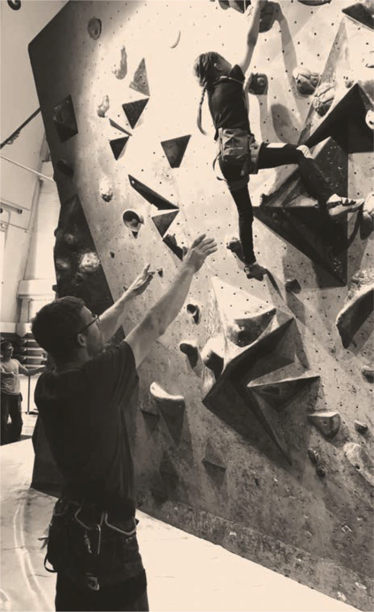
Hantera övergången: organisation och ledarskap, s. 222
"För mig handlar transformativt ledarskap om att leda med autenticitet, sårbarhet och en förmåga att visualisera alternativa framtider. Det handlar om att våga vara en förebild,
skapa intellektuell stimulans och visa omtanke för människor."
"För det första handlar det om att ge plats för fantasi och kreativitet. För det andra måste vi omvärldsbevaka och bygga alternativa framtider snarare än att fastna i en enda vision. Och för det tredje behöver vi skapa forum för samtal som uppmuntrar till reflektion och förståelse för systemens
komplexitet."
"Jag tror att vi behöver mer fantasi och en stark känsla av angelägenhet för att skapa en bättre framtid. Transformativa ledare måste kunna inspirera, vara modiga och samtidigt skapa trygghet i en värld som är komplex och osäker."
Josephine Bladh, Konung Gustav V:s 90-årsfond
Facilitera systemisk transformation
Facilitera systemisk transformation, s. 242
Stöd för omvandling inom etisk AI: Från teori till praktik
Kristina Knaving, RISE
Att stödja transformation inom AI med ett etiskt perspektiv innebär att man måste ta till sig både möjligheter och begränsningar, och vara villig att ägna tid år att förstå tekniken. När jag arbetar med människor för att de ska förstå AI på ett kritiskt sätt, betonar jag just detta. Man måste förstå både vad AI kan göra på ett lysande sätt, och var den kämpar eller misslyckas.
AI är en transformerande teknik för att den är lättillgänglig, ofta kapabel och kan agera flexibelt på komplex information - något vi tänker oss är en mänsklig uppgift. Det är också en svår teknik att förhålla sig till eftersom den inte är transparent - man vet inte hur ett beslut tas av en AI. Det går inte heller att skriva tester eller manualer som helt perfekt täcker interaktion med AI, eftersom ingen situation är den andra lik. Istället behöver människor som arbetar med AI kompetens för att kunna göra bedömningar på egen hand - när behöver man dubbelkolla och vilken förståelse och information behöver man för att kunna göra detta?
Min metod för att stödja transformation går längre än att bara ge människor information; jag försöker visa hur man kan tänka. När jag föreläser upplever jag att mitt uppdrag sträcker sig utanför att presentera svar, jag behöver också visa på hur man kan angripa frågor. Jag modellerar detta tänkande med att resonera i realtid och kritisera och kontextualisera mina resonemang.
Jag är inte rädd för att visa att jag inte alltid har perfekta svar. Istället försöker jag demonstrera tillvägagångssätt: ”Jag skulle ta itu med det här genom att...”. Man vill lära andra att ta sig an problem, inte ge polerade, färdigpaketerade lösningar och svar.
Mitt förhållande till AI började genom att experimentera, inte bara genom att läsa. När jag först fick tag på den tidiga GPT-2 (före ChatGPT) var min första instinkt var att testa om den hade bias - jag gjorde experiment för att se om olika verbtyper skulle generera manliga eller kvinnliga karaktärer. Resultaten bekräftade mina misstankar.
Det hela blir en blandning där experimenterande, diskussion, utlärning och påläsning, illustrerar och utmanar varandra. Jag testar fenomen som jag läst om och försöker förklara de fenomen som jag observerar. Genom att experimentera med tekniken och försöka utmana vad den kan göra, bygger jag upp en personlig förståelse till den som abstrakt kunskap inte kan ge.
Transformation är inte något man bara pratar om - det är något man gör. Etik kan inte bara vara teoretisk, man behöver tillämpa den. Man behöver kanske inte ha djupa tekniska kunskaper - jag har inte utvecklat modeller själv - men inte heller kan man tänka att det bara är andras uppgift att förstå begränsningarna med den teknik man använder.
Genom att tillämpa det här arbetssättet, och vara tydlig med att jag själv är på en utvecklingsresa, hoppas jag att jag hjälper andra att utveckla sin egen relation till AI. Det är genom denna praktiska och reflekterande metod jag tror att vi verkligen kan stödja omvandlingen i en värld som blir alltmer AI-influerad.
Metallparadoxen – design för komplex förändring
Lisa Carlgren,Tisha Hupkes, RISE
Metallparadoxen är ett 2-dagars event, utformat som en designsprint och en utbildning i design thinking. Deltagare utifrån olika perspektiv arbetar med komplexitet kopplat till grön omställning, råvaruutvinning och markanvändning.
Den komplexa väven som utgör metallparadoxen rymmer målkonflikter kopplat till exempelvis energiproduktion, konsumtion, urfolksrättigheter, miljöskydd, geopolitik, regional utveckling, turism och arbetstillfällen. Deltagarna får utforska den här komplexiteten med hjälp av ett arbetssätt som handlar om just komplexitet, mänskliga värden och systemsyn.
Den underliggande tanken är normkritisk: gruvbranschen är traditionell med en homogen (manlig) arbetskraft. Gruvnäringens förmåga till transformation och innovation är central för att uppnå mer rättvis och hållbar mineralutvinning. Branschen gagnas av att personer med andra bakgrunder, idéer, arbetssätt och förhållningssätt kommer in - både som yrkesverksamma, och som allmänt engagerade i frågan. Det kan öppna upp för nya typer av samarbeten, nätverk och möjligheter att adressera utmaningar på systemnivå.
Man jobbar utifrån hypotesen att man för att locka en blandad målgrupp, behöver adressera elefanten i rummet – nämligen att gruvindustrin ofta upplevs som gammaldags, smutsig och oetisk. Ja, kanske rentav onödig. Deltagarna har uppskattat att få utforska nyanser i de här svåra frågorna, och vi som faciliterar tycker också att temat hjälper oss att fördjupa vår förståelse och nyfikenhet.
”Vi eftersträvar en fossilfritt samhälle och grön omställning, men ingen vill ha gruvor, vindkraftverk eller kalhyggen.”
Förutom att samlas och engagera sig i en viktig hållbarhetsfråga, får deltagarna lära sig nya arbetssätt att använda vidare sen i sitt arbete. Vi utgår från designmetodik, och mer specifikt design thinking, där vi testar olika verktyg för att kreativt och insiktsfullt jobba med fokus på både individ och system.
En specifik målgrupp är pedagogisk personal på science centers, teknikmuseum runt om i landet. De får inspiration till hur de kan levandegöra frågan på sätt som väcker intresse hos barn och unga, utan att bagatellisera det som kan vara problematiskt. Deltagarna får också ta del av stödmaterial som ger olika perspektiv på ämnet, samt tips och underlag för att själva genomföra kreativa och utforskande övningar i den egna verksamheten.
Eventet är finansierat av Vinnova genom Swedish Mining Innovation, och faciliterat av forskare / design thinking specialister från RISE Research Institutes of Sweden.
Polisen: Att tänka om kring sitt uppdrag – när verkligheten förändras
Erik Bakkman, RISE (fd Polismästare NOA)
När Polismyndigheten insåg att brottsligheten de stod inför inte längre kunde mötas med traditionella lösningar, växte behovet av att tänka om. En förändrad omvärld med ökande komplexitet, snabbrörlighet och antagonistiska aktörer, ställde nya krav på myndighetens sätt att förstå sitt uppdrag.
Tillsammans med forskare på RISE påbörjades en förflyttning mot att se samhället som ett adaptivt och komplext system – där orsaker och effekter är sammanflätade, och där lösningar kräver samverkan snarare än kontroll. Transformationsteorin blev ett viktigt verktyg för att sätta ord på det skifte som redan pågick inom myndigheten.
I stället för att organisera utifrån fasta roller och linjära processer, började man arbeta med problemanpassade förmågor. Från en uppfattning om brott som avgränsade händelser med tydliga lösningar, till ett synsätt där brottslighet förstås som ett systemiskt fenomen – där olika verksamheter behöver agera tillsammans, utifrån gemensamma målval och delad information.
I samarbetet med RISE har Polismyndigheten utvecklat sin strategiska analysförmåga, byggt framsyn kring framtida scenarier och fördjupat sin innovationsledning på flera nivåer. Polismyndigheten har fått stöd i att leda i komplexitet, och forskningsprojekt har fördjupat förståelsen för hur samverkan mellan myndigheter kan organiseras när brottsligheten rör sig över organisatoriska och geografiska gränser.
Det som vuxit fram kan beskrivas som ett slags brottsbekämpande innovationssystem – ett arbetssätt där teknologi, mänskliga förmågor, struktur och riktning samverkar för att hantera det oväntade. Tydliga resultat syns i form av minskat antal skjutningar, ökad uppklarning och stärkt operativ förmåga.
Men transformationen handlar inte bara om resultat. Den innebär också att Polismyndigheten har omprövat sin roll i samhället, i takt med att verkligheten förändrats. Det är ett exempel på vad som blir möjligt när stora myndigheter tillåts tänka nytt – och får stöd att göra det tillsammans med andra.
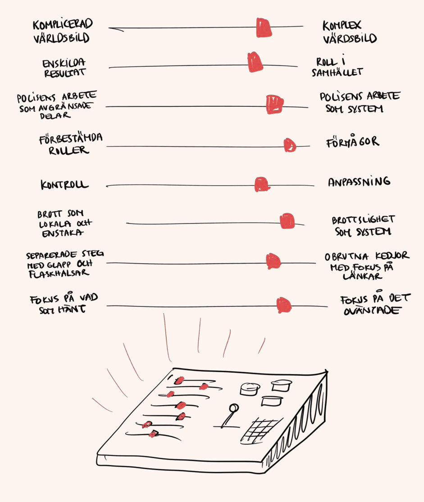
Facilitera systemisk transformation, s. 251
Neutral empatisk facilitering för att skapa tillit mellan nya aktörer
Sara Fallahi, Lisa Carlgren, Derek Diener, RISE Mattias Axelsson, HHS
Projektet Prototypa Digitala Cirkulära Affärsekosystem (PDCA) fokuserade på den tidiga embryofasen av cirkulär transformation inom samhällsbyggnadsbranschen.
Trots den enorma potentialen att minska klimatpåverkan (branschen står för 37% av CO2-utsläpp globalt) så finns få nödvändiga bitar på plats kring policy, roller, logistik, teknikutveckling, branschstandarder eller kundbeteenden. Trots att de flesta stora aktörer har ambitiösa visioner (där de ofta ser sin egen framtida roll som central i en framtida cirkulär ekonomi) så händer väldigt lite och utvecklingen drivs till stor del av pionjärer och fritänkare som krokar arm och försöker hitta möjligheter. Men vem ska man lära ihop med och hur?
Inom forskningen pratar man ofta om rollen som ekosystemledare eller orkestrator – en roll som passar den dominerande parten med rätt styrka och förmåga att samordna de olika aktörernas incitament. Det är en roll som ofta ses som attraktiv och något som olika partners kan tävla om.
I PDCA såg vi att detta inte kan gälla i situationer där partners behöver bygga en atmosfär för samlärande och relationsbyggande – vilket var nödvändigt i den här tidiga fasen. I stället behövs en neutral faciliterande part för att skapa och vårda den bas av tillit som krävs för att deltagare ska kunna vara transparenta i sitt utforskande av roller, ansvar och hur de kan bidra även om de inte kan lägga så mycket resurser.
När de kan vara öppna om sina svagheter, osäkerheter, möjligheter och idéer så uppstår ett klimat som gynnar engagemang och kreativitet. När de vågar exponera det motstånd de möter i sina organisationer, ökar viljan att genuint stötta och inspirera varandra och hitta pragmatiska och okonventionella vägar framåt. De går från att bevaka revir till att ta gemensamt ansvar för ett större syfte.
Studien visade att det är centralt hur processen faciliteras i en orkestrering av ekosystem:
- Neutralitet. Det är viktigt att den faciliterande parten är neutral – utan egen agenda – för att navigera den komplexitet som uppstår i nya aktörskonstellationer i en otydlig kontext. Man behöver kunna ställa kritiska frågor och hantera de spänningar som ofrånkomligen uppstår.
- Fokus på engagemang genom empati och emergens. Processen är bräcklig, och för att överleva så behöver deltagarna bibehålla engagemang över tid och processen måste ta hänsyn till behov och nya engagemangshöjande idéer som dyker upp.
- Kreativt lärande med högt i tak. Processledarna behöver stödja deltagarna genom att skapa utrymme för reflektion, se nya perspektiv, skapa ett gemensamt språk, tänka utanför boxen kring hur man skapar lärandemöjligheter och formulera dessa insikter så att de inte går förlorade. Lärandet i detta projekt var som högst när man tangerade den friktion som finns, på ett hälsosamt sätt – varsamt, provokativt, roligt, lättsamt och allvarligt.
- Ett tvärdisciplinärt faciliterarteam säkerställde här en kombination av nödvändiga kompetenser. Expertis inom respektive domän (cirkulär transformation, innovation av affärsmodeller och innovationsledning) skapade legitimitet och framdrift. Lång erfarenhet av designfacilitering med fokus på emergens, empati, mönsterigenkänning och kreativitet. Ett arbetssätt med utrymme för kontinuerlig gemensam reflektion och emergens, stöttade processen.
Vinnova-finansierat forskningsprojekt med RISE och tre industriparter
Hur utforskar vi transformation genom exnovation?
Men hur kan vi utforska exnovation? Och hur kan insikter spridas, för att bidra till exnovation också i andra sammanhang? I de här projekten utforskar vi, genom att kombinera teori med empiriska studier i fält. Eftersom exnovation behöver ske hos olika aktörer i konsumtionssystemet inkluderar vi tre olika aktörer: beslutsfattare, företag och konsumenter. I ett av projekten börjar vi med fokusgrupper där aktörerna får dela sin bild av vilka inlåsningar och hinder som måste tas bort. De får också ge inspel till en tillräcklighetsorienterad framtidsvision. Sedan får aktörerna experimentera med exnovation i sin vardag och reflektera över vad som händer. Under experimenterandet träffas alla aktörsgrupper två gånger för gemensamt lärande. Utifrån deras upplevelser skapas berättelser om exnovationsresor som tillsammans med exempel på exnovation och framtidsvisioner kan spridas för att inspirera fler till exnovation.
Sara Renström,RISE Anneli Selvefors,RISE
Utveckling av nya mer resurssnåla innovationer lyfts ofta fram som vägen till ett hållbarare samhälle. Men tänk om lösningen i själva verket handlar om att ta bort, snarare än att uppfinna något nytt? Exnovation – borttagande av något befintligt – kan användas för att adressera dagens fossilberoende tekniker och produkter, men också praktiker, strukturer och styrmedel som låser in oss i ohållbara konsumtionsmönster och en linjär ekonomi. I omställningsforskning har vikten av exnovation lyfts fram, men det är än så länge mindre utforskat än innovation. I två projekt på RISE undersöker vi tillsammans med projektpartners därför hur exnovation kan bidra till ett ”tillräcklighetsorienterat” samhälle – ett samhälle där vi strävar mot ett gott liv inom planetens gränser.
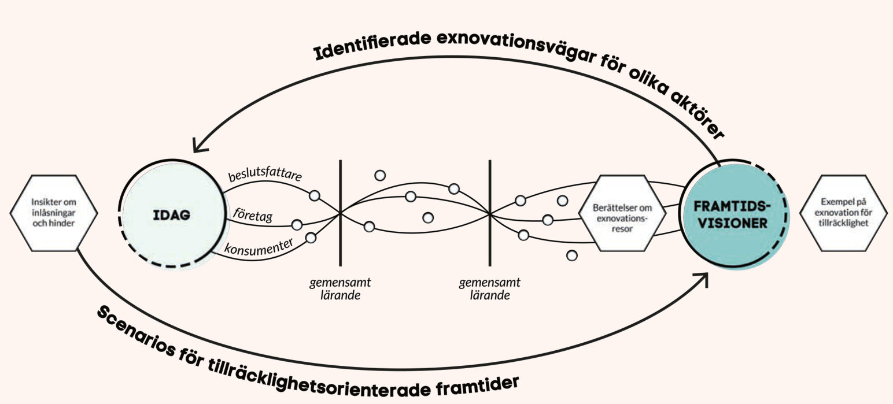
På RISE genomförs under åren 2024-2028 två projekt om exnovation för tillräcklighet:
Exnovation för tillräcklighet: Utforskande av vägar till framtida konsumtion med låg klimatpåverkan är finansierat av Formas inom det nationella forskningsprogrammet om klimat och genomförs med Kungliga Tekniska högskolan.
Exnovation for sufficiency: exploring pathways to an exnovation mindset and sufficiency futures är finansierat inom ”Mistra utmana” och genomförs med Internationella miljöinstitutet vid Lunds universitet och Chalmers tekniska högskola.
Facilitera systemisk transformation, s. 259
The Station of Being – design som drivkraft för transformation i Umeå
Ambra Trotto, EIT Culture & Creativity
Projektet The Station of Being är ett exempel på hur design kan användas för att möjliggöra systemtransformation i praktiken. Under två år samarbetade RISE designforskare med en mängd lokala aktörer i Umeå för att utveckla en ny typ av busshållplats – inte bara som fysisk infrastruktur, utan som katalysator för nya sätt att förstå och gestalta offentlig miljö, mobilitet och hållbarhet i arktiska städer.
Umeå, med sitt kalla klimat och höga hållbarhetsambitioner, deltog i EU-projektet RUGGEDISED, där staden skulle ta fram en prototyp för en "smart" busshållplats. Kommunens uppdrag var från början tekniskt: minska CO2-utsläpp och förbättra energieffektivitet. Men bakom de tekniska kraven fanns också värden som jämställdhet, inkludering och tillgänglighet – grundpelare i Umeås stadsutveckling.
RISE arbetade med uppdraget genom designmetodiken Designing for Transforming Practices (DTP). Tillsammans med designingenjörer, studenter, kommunen och andra lokala aktörer utvecklades frågorna: Vad innebär en meningsfull väntan? Hur kan en hållplats bjuda in till närvaro, trygghet och inkludering?
Användarstudier, prototyper, rollspel och fullskaliga modeller användes för att förstå beteenden och utmana antaganden. En central insikt var behovet av att minska osäkerheten i mötet mellan passagerare och busschaufförer. Ljud- och ljusdesign blev nyckelkomponenter där olika färger och ljud signalerar vilken buss som kommer, vilket minskar stress och onödiga stopp. Utvecklingen av hängande kokonger gav former som samtidigt skyddar mot vinden, ger möjlighet till avskildhet eller gemenskap, och skapar trygghet i det öppna rummet.
Under hela processen låg fokus på deltagande, kommunikation och gemensamt lärande. Invånare och intressenter bjöds in till utställningar och testmoment där reflektion och dialog kring stadsutveckling, inkludering och transformation stod i centrum. Projektet blev därmed inte bara en ny hållplats – utan en ny förståelse för vad en smart, hållbar och mänsklig stad kan vara.
Projektet The Station of Being bidrog till förändring på flera nivåer: i individers personliga och professionella förhållningssätt till samhällsomställning, i kommunens upphandlingspraxis och administrativa rutiner samt i samspelet mellan RISE och lokala aktörer. Prototypen – den nya busshållplatsen – ökade trygghetskänslan, särskilt bland kvinnor, och visade hur medborgare kan bli mer aktiva i stadsutveckling. Projektet har också påverkat hur smarta städer kan förstås, utvecklas och forskas om – och därmed bidragit till en ny praktik för samhällsbyggande.
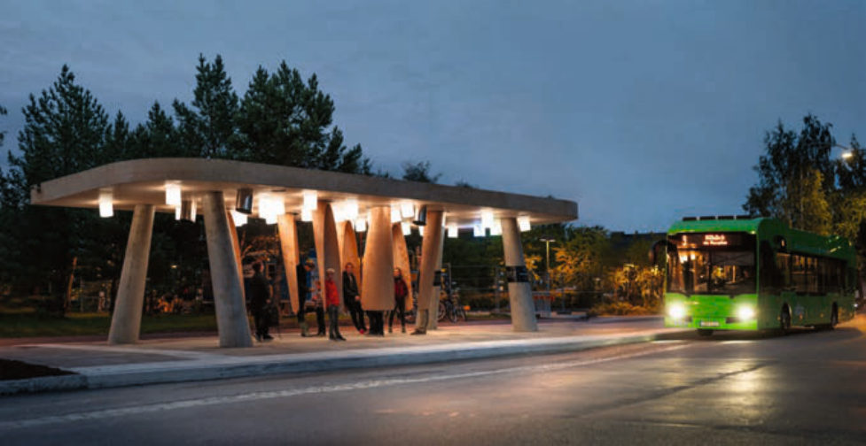
Facilitera systemisk transformation, s. 264
Salong Krångel
Pernilla Glaser, Katarina Pietrzak, Lisa Carlgren, Ambra Trotto, Katarina Bonnevier, Gunilla Edemo, Mona Hallgren, Susanne Lundmark, Petra Bäckman, mfl
Salong Krångel föddes ur en längtan efter att bättre förstå och hantera de komplexa samhällsutmaningar vi står inför. Klimatkris, ökande klyftor, digital transformation – allt hänger ihop, men inget är enkelt.
Här samlas människor med helt olika perspektiv: konstnärer och konsulter, poeter och projektledare, forskare och förändringsledare. Tillsammans utforskar vi hur vi kan tänka nytt, förstå mer – och kanske våga förändra något, även när vi inte vet exakt vad.
Det är en inbjudan till alla som tycker att det känns rörigt, komplext eller bara väldigt svårt att veta var man ska börja. Kom som du är. Vi är många som känner likadant.
Salongen är inspirerad av de litterära salongerna i Paris under 1800- och 1900-talen – men här möts inte bara litteratur utan också erfarenhet, gestaltning och systemförståelse. Det är varken konferens, workshop eller panelsamtal, utan en plats där vi kan möta det vi inte förstår – utan att behöva lösa allt direkt.
En levande plats där berättelser, kroppar och idéer möts. Där vi får ta av oss rustningen av säkerhet och kliva in i samtal med öppenhet, nyfikenhet och en smula humor. Här får det krångliga, skaviga och oväntade ta plats. För just där, i friktionen, finns ofta fröet till insikt.
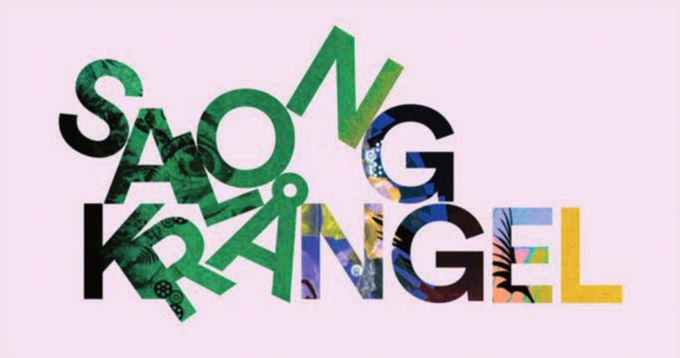
Salong Krångel har arrangerats av RISE, Sweco och designbyrån Savvy – men är till för alla. Den lever också och frodas på olika håll i mindre skepnad och specifika sammanhang, till exempel inom ramen för forskningsskolan Transplace. Vem vet – kanske dyker den upp, där du minst anar det.
Facilitera systemisk transformation, s. 267
Samverket
Nina Bozic, RISE
Ett exempel på ett s.k. tredje rum (third place) är Samverket, en hub för coworking, samskapande lärande och samskapande lösningar kring komplexa samhällsutmaningar som kräver systemtransformation. Samverket samlade olika aktörer från den svenska offentliga sektorn och var ett pilotprojekt finansierat av Vinnova.
Den ursprungliga hubben i Östersund finns fortfarande kvar, och flera kommuner i Sverige har inspirerats av Samverket och utvecklar nu egna hubbar för systeminnovation. Syftet är att skapa plattformar där olika samhällsaktörer kan mötas och samverka kring gemensamma utmaningar.
Hubbar som Samverket byggs upp genom en gemenskap av medlemmar, där delaktighet formas genom delade ritualer (till exempel veckovisa välmåenderitualer, gemensamma samtal vid eldstaden och samskapande workshops). Dessa aktiviteter drivs av medlemmar som arbetar utifrån gemensamt överenskomna principer, ofta formaliserade i ett manifest. Specifika faciliteringsmetoder och rummets utformning används ofta för att stödja utvecklingen av sådana hubbar.
För mer information, se Samverket Playbook
Viable Cities
Vanja Östman, RISE
Viable Cities är ett strategiskt innovationsprogram som jobbar för missionen Klimatneutrala städer 2030 med ett gott liv för alla inom planetens gränser. Inom programmet arbetar 48 svenska städer tillsammans med flera nationella myndigheter, och Viable Cities arbetar utifrån en helhetssyn på hållbar stadsutveckling. Det innebär att programmet utgår från att alla i samhället måste inkluderas för att nödvändiga förändringar ska gå att genomföra. Och inom Viable Cities samverkar många viktiga beståndsdelar. En viktig del av arbetet är processledarna som leder omställnings- och förändringsarbete i städerna.
En central del i deras arbete handlar om att bygga omställningsteam och omställningsarenor, där stadens aktörer samarbetar för att identifiera och implementera lösningar för klimatomställning. Storytelling används för att förenkla och förändra narrativet och för att engagera fler i klimatomställningsarbetet.
Programmet främjar samarbete över sektorsgränser och bryter ner silos för att gemensamt utveckla lösningar i skärningspunkten mellan olika aktörer.
Human Gardening
Niklas Huss, Uppsala Kommun
Samverket (föregående sida) blev en modell, plats och rörelse som skapades för att möjliggöra samskapande samhällstransformation inom offentlig sektor. En av initiativtagarna var Niklas Huss som med erfarenhet från både offentlig och privat sektor, bland annat som innovationschef på Skatteverket och Länsförsäkringar, under många år har drivit frågor om hur vi bättre kan mötas, förändra och bygga system tillsammans.
Idag är han utvecklings- och innovationschef i Uppsala kommun – men kallar sig hellre human gardener. För honom handlar det om att skapa förutsättningar för människor att växa, lära och agera tillsammans. Det är först då verklig förändring blir möjlig. Samverket blev ett sådant utrymme – ett tredje rum för att bygga framtidens lösningar, där offentliga aktörer kunde ta av sig rustningen och kliva in i ett gemensamt utforskande.
- Vi har byggt starka system för att förvalta det vi redan gör. Men för att möta framtidens utmaningar krävs något annat. Vi behöver ett andra ben – ett lärande, mänskligt ben som får verka utanför systemets logik, men fortfarande vara en del av kroppen.
Samverket är alltså inte bara en plats – det är ett sätt att tänka och göra. Det är en konkret struktur för att skapa delaktighet, tillit och psykologisk trygghet. Genom symboliska ritualer, öppen design och gemensamma manifest blev Samverket ett nav för kollektiv intelligens, där titlar parkerades vid dörren och där människor möttes förutsättningslöst. För att lyssna. För att utforska. För att bygga nytt tillsammans.
"Vi byggde en plats med en lägereld i mitten – för att minnas hur vi blev människor: genom att lyssna. Det är vår näring – för kreativitet, empati och mänsklig kraft."
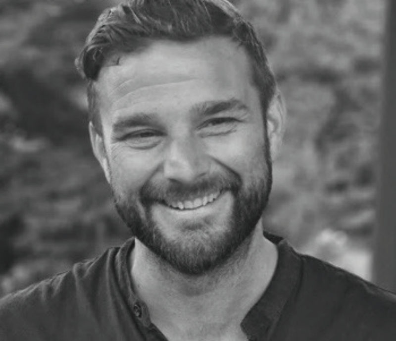
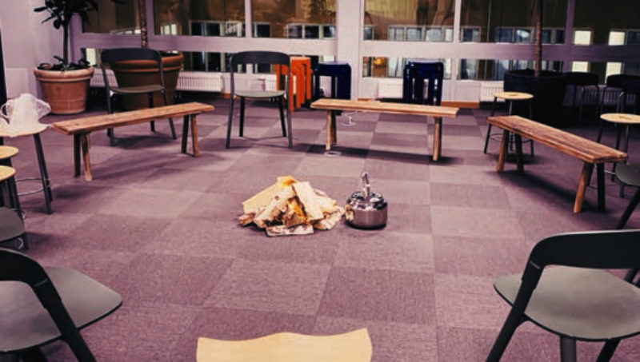
Facilitera systemisk transformation, s. 274
Att leda i det okända: skolledarskap i en tid av transformation
Lotta Fransson, RISE
Skolledarskap utövas idag i ett landskap i rörelse. När samhälleliga förändringar, teknologiska skiften och nya krav möter gamla strukturer, uppstår spänningar som inte kan lösas med mer av det gamla. Det kräver något annat – nya sätt att tänka, leda och lära tillsammans.
FutureReady by RISE är ett initiativ som utforskar vad det innebär att vara ledare i skolan just nu – i en tid av pågående transformation. Genom samtal, reflektion och gemensamt utforskande får deltagarna möjlighet att närma sig framtidsfrågorna inte som prognoser, utan som något de själva är med och formar.
Programmet är ett sätt att pausa vardagens styrlogik och i stället rikta blicken mot frågor som: -Vad betyder det att vara ledare i förändring, inte genom förändring? – Hur kan skolledare bli kulturbärare för lärande snarare än kontroll? – Vad krävs för att navigera i komplexitet utan att fastna i förenkling?
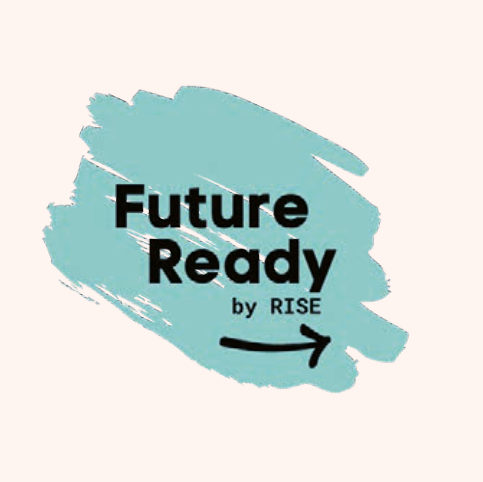
Varför behövs den här typen av kompetens? I en samtid präglad av snabb förändring och komplexa samhällsutmaningar står skolan inför nya utmaningar och ett växande behov av förnyelse. FutureReady bygger på fyra teman: samhällstransformation och utbildning, professionellt lärande, framtidens skolledare och ledarskap som kollektiv kraft. Det är en process där skolledare tillsammans tränar sin förmåga att hålla kurs när kartan ritas om.
Vad leder det till? Deltagarna får möjlighet att rikta blicken framåt – inte bara mot framtiden som idé, utan som något de redan är en del av. Ett gemensamt språk börjar ta form kring de komplexa utmaningar som skolledare dagligen möter. Genom samtal och reflektion växer en ökad medvetenhet fram om behovet av att förnya inte bara strukturer, utan också sättet att förstå och utöva ledarskap.
”Genom modellerna och reflektionerna i lärgrupperna är jag mer rustad att ta mig an mitt framtida ledarskap”
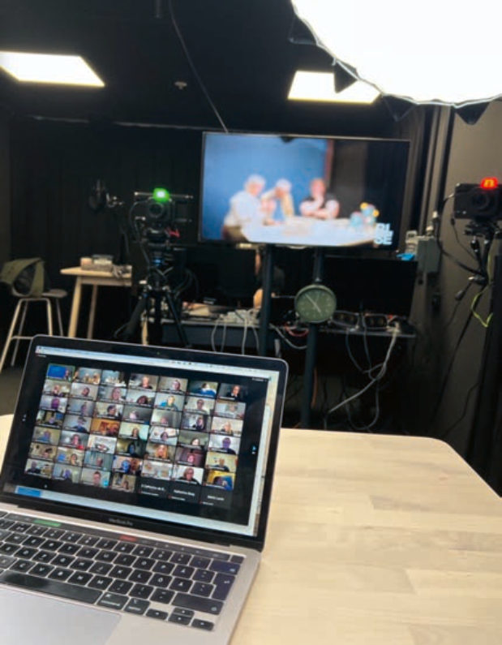
FutureReady by RISE
Facilitera systemisk transformation, s. 276
Ledarskapslabbet där unga formar framtidens samhälle
Josephine Bladh, Konung Gustaf V:s 90- årsfond, Lisa Carlgren, RISE
Ungdomsrörelsen i Sverige är stark och ungas engagemang är högt. Omvärlden är snabbrörlig och megatrender påverkar ledarskapet i samhället. En föränderlig värld med nya, engagerade ungdomsgenerationer kräver unga ledare som kan tänka nytt kring ledarskap och demokratisk organisering.
Ledarskapslabbet är en katalysator som tillsammans med ungdomsrörelsen i Sverige utvecklar nya sätt att leda och hitta innovativa lösningar på de samhällsutmaningar vi står inför. Det är ett ledarskapsprogram, finansierat av Konung Gustaf V:s 90-årsfond. Genom experiment och innovation utvecklar deltagarna lösningar för att möta komplexa samhällsutmaningar. Ledarskapslabbet erbjuder verktyg, mod och stöd för unga ledare att utforska nya sätt att organisera sig och våga testa idéer, samt att lära av både framgångar och misslyckanden.
Hur går Ledarskapslabbet till i praktiken? Ledarskapslabbet är i grunden en utbildning i innovativt ledarskap genom design thinking, där deltagarna utmanas genom att applicera metodiken när de jobbar med sina utmaningar under 20 veckor.
2025 har tio ungdomsorganisationer antagits med en komplex samhällsutmaning som är i linje med föreningens ändamål. Varje organisation deltar med en labbgrupp på fyra personer, varav tre är under 30 år: ofta generalsekreterare, förbundsordförande ordförande, och/eller lokala ungdomsledare.
https://gv90.se/ledarskapslabbet/
Utvecklingen sker genom ett antal fysiska labbtillfällen och arbete däremellan, med en tydlig process strukturerad i ett antal faser kopplat till specifikt pedagogiskt innehåll i träffarna.
De flesta deltagare har låg kunskap om design thinking innan, och de komplexa frågorna med deras inneboende relationer och systemknutar ger upphov till många lärmöjligheter när deltagarna ska navigera den osäkerhet och de överraskningar som uppstår under resans gång.
Lärandet förstärks genom ett innovativt stödsystem i form av erfarna teamcoacher, inbjudna experter, och möjlighet att söka extra bidrag för att möjliggöra sprintar, tester, fysiska träffar, eller få annan extern inspiration.
Exempel på utmaningar 2025:
“Många unga ser sig inte som ledare och saknar förebilder. Vår organisaion vill inspirera unga till demokratiskt ledarskap i mindre samhällen genom hållbara och inkluderande modeller”. (Förbundet Vi unga)
“Urbanisering och digitalisering har minskat intresset för traditionella föreningsformer, och social samt ekonomisk ojämlikhet begränsar ungas tillgång till kulturellt och socialt kapital. Vår organisation vill skapa inkluderande plattformar där unga från olika bakgrunder kan delta och leda genom kreativitet och demokrati”. (United Soul)
“Sjunkande läs- och skrivkunnighet och minskande intresse för föreningsliv bland unga är utmaningar, och vår organisation vill använda spelkultur som verktyg för att engagera och stärka unga ledare samt stärka läs- och skrivkunnigheten”. (Sverok)
“Klimatkrisen och förlust av biologisk mångfald skapar maktlöshet bland unga, och vår organisation vill utveckla metoder som stärker deras förmåga att driva lokal och nationell förändring”. (Fältbiologerna)
Facilitera systemisk transformation, s. 280
Medskapande framtid – i våra organisationer
Álvaro Aranda Muñoz, Nina Bozic Yams, Lisa Carlgren,RISE
Hur kan vi hjälpa anställda i organisationer att gå från att vara passiva mottagare av förändring till att aktivt skapa den framtid de själva föredrar? Hur kan vi hjälpa dem att tänka annorlunda om sina roller, arbetsflöden och sammanhang, samtidigt som de navigerar i de osäkerheter som tekniska framsteg och AI:s utveckling medför? Dessa frågor inledde vår resa för att hjälpa en svensk offentlig akademi som utbildar sjukvårdspersonal såsom läkare, sjuksköterskor, barnmorskor och tandläkare.
Vi utformade och testade en Co-Experiential Futuring-metod (att utforska framtider genom upplevelser) som ett sätt att stödja organisationer som står inför kontinuerliga omvandlingar. Vi gjorde det ur ett samarbetsperspektiv där vi bakade in spekulativ design och konst i framtidsprocessen. I den här processen fick deltagarna möjlighet att aktivt skapa en egen önskad framtid genom en resa på fem workshops.
Under dessa gick deltagarna successivt från abstrakt utforskande till konkret åtgärdsplanering.
Det gjorde det möjligt för deltagarna att utveckla en känsla av handlingskraft och ägande över sin professionella framtid.
Vår workshopmetod i fem steg
1. Utforska nuläget: Identifiera aktuella utmaningar och önskemål om förändring, skapa visuella collage som visar styrkor och utvecklingsmöjligheter inom organisationen.
2. Samskapa framtidsscenarier: Med utgångspunkt i samhällstrender och inspirerande framtidsmaterial, utveckla spekulativa berättelser om inlärningsmiljöer för år 2050, och fysiska modeller för att representera dessa scenarier.
3. Utveckla framtida roller: Utforska framtida arbetsroller som möjliggör lärande och kompetensutveckling. Med hjälp av en specialdesignad kortlek utveckla spekulativa berättelser kring roller som möjliggör lärande.
4. Prototypa tekniska superkrafter: Skapa enkla prototyper som representerar hur teknik kan förstärka deltagarnas framtida roller. Utforska hur dessa tekniska lösningar skulle stötta framtida roller och sammanhang.
5. Förverkliga och reflektera: Förkroppsliga framtidsscenarier och identifiera konkreta initiativ och handlingsplaner för att genomföra de insikter som uppstått genom processen.
Vad lärde vi oss av projektet och den metod vi skapade?
Den samskapande metoden främjade aktörskap och ägarskap bland deltagarna. Kombinationen av kreativa aktiviteter i en tillåtande atmosfär bidrog till att deltagarna kände ägarskap att forma sin framtid inom organisationen. Dessutom underlättade metoden samarbete över organisationsgränser och stuprör mellan olika avdelningar. Deltagarna fick nya perspektiv och insikter kring hur man kollektivt kan navigera förändringar.
De konstnärliga inslagen i workshoparna fungerade som kritiska provokationer, som knuffade deltagarna utanför sina komfortzoner och uppmuntrade dem att ifrågasätta etablerade organisatoriska paradigm. Detta återspeglades under workshopresan där deltagarna utvecklade kritiska perspektiv på teknik: de reflekterade på djupet över att upprätthålla en balans mellan tekniska framsteg och mänskliga värden, särskilt med tanke på att bevara etiska aspekter av exempelvis vård, under anammandet av digitala verktyg.
Välkommen Till Bords
Hayley Ho, Elsa Vaara, RISE
Oavsett vilken ålder vi har just nu – så blir vi alla äldre. I framtiden kommer andelen äldre att öka och samhällets kostnader för äldreomsorgen ökar drastiskt.
"We Are All Old" är ett designforskningsprojekt av Hayley Ho och Elsa Vaara som inbegriper samtal om framtida äldreomsorg genom en engagerande och förkroppsligande upplevelse. Genom en blandad designmetodik och konstnärliga praktiker, deltar de medverkande i designprototyper där de får fundera över vad de vill ha i sin egen ålderdom och vad de kan göra för att bidra till denna framtid.
I prototypen Välkommen Till Bords samverkar RISE med Livsmedelsakademin. Prototypen de skapat fungerar som en popup-utställning och är designad som en fyrarätters middag runt ett stort bord. Upplevelserna vid bordet tar deltagarna med på en resa där de får skapa en relation till sitt framtida äldre jag. De får även spekulera kring hur de kan förändra äldres måltidssituationer här och nu.
Projektets resultat i den spekulativa matprototypen, fungerar som en popup-display. Syftet med projektet är att hjälpa människor att föreställa sig en framtid där ingen äldre är undernärd och där hela måltidsupplevelsen är en tillfredsställande och positiv upplevelse.
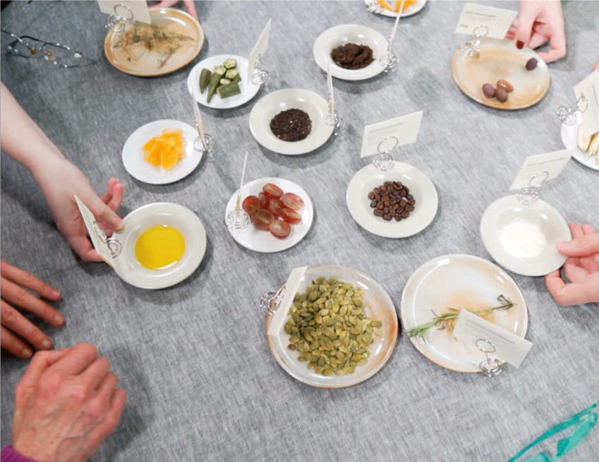
Att leva med solen – energiomställning med relationer i centrum
Fanny Lindh, Haley Ho, RISE
SIMBY – Sun In My Back Yard är ett tvärdisciplinärt forskningsprojekt som utforskar solenergi ur ett kulturellt, personligt och systemiskt perspektiv.
Bakgrund: Utvecklingen av sol- och förnybar energi är idag ofta teknik- och marknadsdriven, där det är de redan identifierade behoven hos en teknikintresserad målgrupp som styr. Det gör att andra värden, känslor och relationer till energi ofta hamnar i skymundan.
När nya energianläggningar etableras kan det leda till motstånd – det så kallade "not in my backyard"-fenomenet – eller till målkonflikter mellan olika hållbarhetsmål. Till exempel kan behovet av energiförsörjning krocka med människors behov av vackra, avkopplande livsmiljöer och kulturhistoriska värden.
Istället för att låta teknik, marknad eller politiska beslut definiera framtiden för solenergi, ställer SIMBY frågan: Vad händer om vi börjar med människors egna erfarenheter och relationer till solen?
Projektet samlade under ett år konstnärer, formgivare, forskare och aktörer från industrin för att gemensamt undersöka hur solenergi kan bli en del av våra liv på nya sätt.
SIMBY erbjuder en plats för långsam och gemensam reflektion, där ovisshet ses som en resurs snarare än ett hinder. I stället för att försöka förutsäga framtiden, ville projektet stimulera till nya sätt att tänka, känna och samarbeta kring energiomställning. Det handlar om att bygga kulturell beredskap – inte bara teknisk – för en framtid där solen får en mer närvarande och meningsfull roll i våra liv.
Projektet byggde på designmetodik där fokus ligger på att öppna upp frågor och utforska framtidsmöjligheter som vi ännu inte kan se.
Genom fyra säsongsbaserade workshops – vår, sommar, höst och vinter – knöts vårt förhållande till solen samman med årstidernas skiftningar. Deltagarna bjöds in till poetiska övningar, berättande och spekulativ design för att utforska solens roll i sin vardag, sina minnen och sina framtidsvisioner.
Efter en digital workshop för att testa formatet, genomfördes den första fysiska workshopen ”Sun & Snow – Reflections” under vintern på Röhska museet. Deltagare fick skriva berättelser om sina möten med solen, ta del av vidare perspektiv kopplade till vintersolen – från konst, samhälle, vetenskap, andra kulturer – och sedan både gemensamt och enskilt reflektera kring vår relation till solen. Vår- och sommardelarna genomfördes fysiskt på Vandalorum konsthall där verket också presenterades i en solutställning under hösten 2024. Projektet innebar också ett konstnärligt samarbete med Ung Svensk Form,.
Den här filmen av Patrik Johansson ger en inblick i den samskapande designprocessen. Mer information om SIMBY finns här.
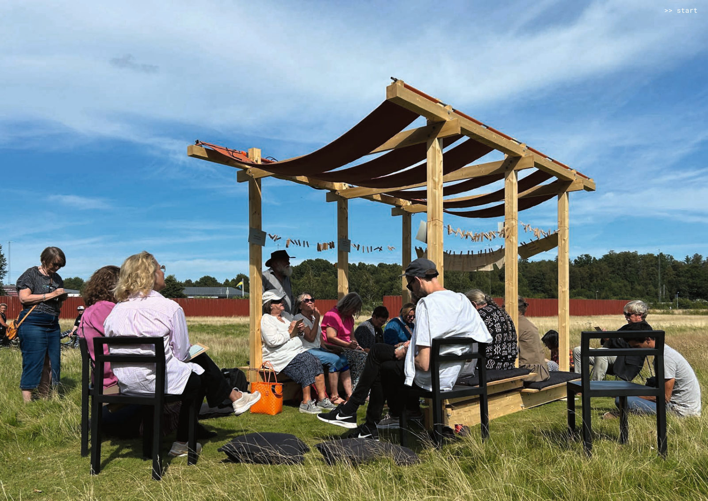
Facilitera systemisk transformation, s. 286
Samskapande för hållbara matsystem bortom tekniken
Kristina Andersson, Ann Lorentzon, Lisa Carlgren, RISE
MOC är ett EU-projekt om matsvinn som ligger långt fram i teknikutveckling. Det handlar om att utveckla en smart förpackning som kan känna av matens tillstånd, justera bäst-före-datum och ändra vad som står på etiketten. Det rör sig bort från idén om att innovation sitter i prylar och in i frågor om relationer, regelverk och ansvar. Ett syfte är att förstå hur olika aktörer i matsystemet – producenter, forskare, handlare och konsumenter – tillsammans kan utforska nya vägar mot mindre svinn.
Tanken är att den smarta förpackningslösningen ska minska matsvinn genom att konsumenter inte slänger fullgod mat bara för att bäst-före-datumet gått ut, och att leverantörs- och försäljningsledet ska bli bättre på att hålla sina rutiner så att mat inte måste slängas.
Den tekniska lösningen är komplex, en kombination av själva lådan, en skyddande lösning som sprayas på emballaget, en smart etikett som fungerar som sensor och har ett bläck som kan ändra utseende kopplat till vad den känner av. Det finns även europeisk lagstiftning som riskerar att sätta käppar i hjulet i flera led.
Komplext upplägg: Projektgruppen består av ca 50 personer från olika länder och organisationer där några experimenterar med hållbarhet, några med bakterier och fermentater. Några utvecklar etiketter, sensorer och bläck, vilket är svårare än man trodde. Några försöker få till en plastbox och film som klarar återvinningskrav och massproduktion.
Några försöker förstå kunder – men processerna är långa och teknikutvecklarna behöver tidiga svar. Några gör livscykelanalys – men det är inte enkelt att enas om vad som ska ingå och hur. Några utforskar policy-djungeln – men inser att det är allt annat än logik som ger långtgående förändringar i livsmedelslagar.
Olika principer ställs mot varandra och vilken som vinner beror på exempelvis på hur man definierar hållbarhet och vad man tycker är projektets problem. Kan en förpackning som är svår att återvinna ändå vara miljövänlig för att den i förlängningen gör så att mindre mat slängs?
Konsumenternas inställning är en joker i leken: Tänk om konsumenterna inte förstår funktionen och blir osäkra och slänger maten ännu tidigare – så att lösningen får motsatt effekt? Eller om producenter och försäljare drar öronen åt sig?
Hur stor är miljövinsten? En kycklingfilé som produceras i Norge har betydligt längre hållbarhet än en som produceras i Portugal – förbättringspotentialen skiljer sig mycket.
Kommer portugiserna vilja ha kyckling som håller längre än de är vana vid, eller kommer de tycka själva tanken är konstig även om kycklingen är ätbar? Vill de norska laxproducenterna sälja lax med längre hållbarhet när riktigt färsk fisk anses som premium? Om ett EU-policyförslag går igenom, tappar man de tyska kunderna om produkter inte kan säljas som ekologiska?
Ska man ta en omväg genom att utveckla en komplicerad teknisk lösning när man skulle kunna reducera matsvinn på andra sätt – exempelvis om portugiserna i sommarvärmen kunde få hem kycklingen utan att den blev dålig på vägen?
Det blir som med hönan och ägget. Utan teknikutveckling går det inte att veta om den tekniska lösningen ens är möjlig. Utan konsumentförståelse så vet man inte om teknikutvecklingen är till nytta. Och europeisk lagstiftning rör sig så mycket men ändå så långsamt att det är svårt att säga om lösningen blir regulatoriskt möjlig.
Ett sånt här projekt vinner oerhört mycket på att man inte enbart fokuserar på tekniken och vad som är tekniskt genomförbart.
Man behöver ställa de kritiska frågorna, och deltagare från de olika områdena behöver interagera med varandra och se varandras perspektiv. Med hjälp av designinspirerade metoder synliggör vi antaganden som tas för givna, belyser var det finns behov att skapa bryggor, lägger grunden för samverkan mellan grupper och uppmuntrar till en prototypande ansats som ökar möjligheter till kommunikation.
Tyresö digitaliserar med hjärta och eftertanke
Jessica Dagman, Lina Orell, Patrik Eriksson, Niklas Carlborg, Marcus Tyrén, RISE
Sverige står inför betydande demografiska förändringar, där befolkningen förväntas öka med över två miljoner människor fram till 2070. Den största ökningen sker i de äldre åldersgrupperna, vilket innebär att en större andel av befolkningen kommer att vara äldre. Detta ställer höga krav på kommunerna att utveckla och anpassa sina välfärdstjänster för att möta de förändrade behoven.
Tyresö kommuns arbete inom äldre- och omsorgsförvaltningen visar hur en kommun kan anpassa sig till demografiska förändringar och samtidigt utveckla innovativa välfärdslösningar för att möta framtidens utmaningar.
Kommunens ansats till ny digital teknik och utveckling är en medveten transformationsprocess där människan och samhällets behov konsekvent har stått i centrum.
Resan initierades med insikten om framtida utmaningar – en åldrande befolkning och en potentiellt stagnerande eller minskande personalstyrka. Kommunen ville utforska hur tekniken kunde möjliggöra en mer hållbar och kvalitativ vård och omsorg och samtidigt förbättra arbetsmiljön för de anställda.
Arbetet präglas av en syn på digitalisering som ett medel för att uppnå mål kopplade till människors välbefinnande och en förbättrad arbetsmiljö.
En central aspekt i transformationsarbetet har varit formuleringen av tydliga och värderingsdrivna principer. Dessa har fungerat som en kompass genom digitaliseringsprocessen och säkerställt att tekniken tjänar ett högre syfte än enbart effektivisering. Principer som trygghet, minskat socialt och digitalt utanförskap, medborgarnytta och en attraktiv arbetsplats har aktivt väglett beslutsfattandet och projektet.
Runt 30 olika digitala lösningar har införts under en femårsperiod. Implementeringen av trygghetskameror adresserar trygghetsaspekten samtidigt som den effektiviserar nattarbetet och initiativet med digitala fixare syftar till att minska digitalt och socialt utanförskap bland seniorer.
Tyresö har tillämpat en iterativ och utforskande ansats med pilotprojekt och stegvis implementering, vilket möjliggjort kontinuerlig utvärdering och anpassning. Involvering och delaktighet har varit centralt, med fokus på att skapa förståelse för nyttan med digitala lösningar hos alla berörda parter.
Tyresö ser digitalisering som en kulturell förändringsprocess, där digitalisering är ett verktyg för att uppnå mänskliga och
samhälleliga värden.
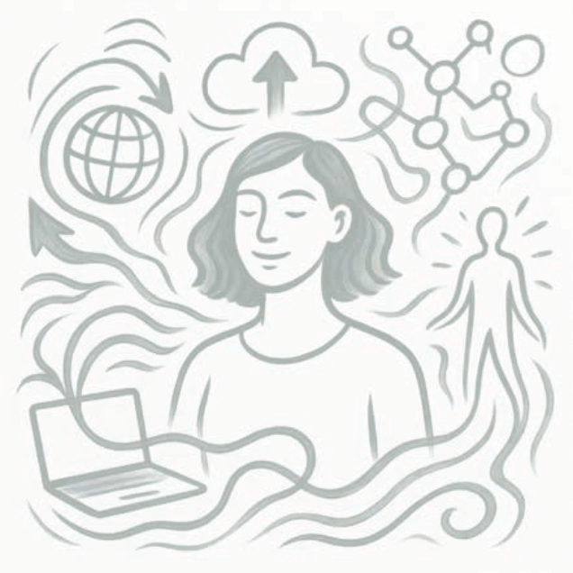
Smart City Lab blev
och ett skifte från dagens stuprörsstruktur till en sammankopplad, horisontell struktur. Detta kräver – utöver teknik, standarder och ramverk för datahantering – också nya kompetenser, koncerngemensamma rutiner, visionär styrning och effekthemtagning på en mer övergripande nivå. Det kräver en kultur som genomsyras av gemenskap, delning och innovation – och sist men absolut inte minst – ett mod och en stark sammanhållning; såväl i ledningen som i och mellan verksamheter. Det som beskrivs är en bred organisationsförändring.
Therese Balksjö, RISE
Tillgång till IoT-data (Internet of Things) och ökad informationsdelning inom och mellan Sveriges kommuner – och vidare – är avgörande för att skapa ett hållbart samhälle. Men vi är inte där än.
Det finns idag teknik, infrastruktur och principer för att dela data på ett standardiserat sätt enligt EU:s rekommendationer. Detta nyttjas dock inte fullt ut i majoriteten av kommunerna. Därför skapades år 2021 projektet Smart City Lab: kommunernas stödfunktion för datadriven utveckling. Vi förstod att utmaningen inte enbart är teknisk, men vi hade en naiv tro på att ”om vi alla bara enas om standarder och ramverk – då är vi väl där?”. Det visade sig att den organisatoriska utmaningen var större än vi först anade. Vad som saknas idag är en kommun(-koncern-)gemensam datahantering
Idag brister förmågan att genomföra denna förändring. Här pratar vi om en brist på omställningskapacitet i organisationen, inte minst på grund av kommuners ”silofiering” – ett stuprörstänkande inom organisationers verksamheter, uppdrag, budget och mandat.
För att minska silofieringen krävs en omställningskapacitet, och för att skapa kapaciteten krävs att organisationen bryter sig lös från silofieringen. Här står vi alltså inför ett moment 22 som kräver en systemisk transformation.
Under våren 2025 skapades därför projektet Smart City Transformation Lab – för att stötta kommunerna i att utveckla sin mottagar- och omställningskapacitet. Syftet är att arbeta med en faktisk förflyttning gällande kommungemensam IoT och informationsdelning som verktyg för att skapa smarta hållbara städer och kommuner / koncerner.
Ett verktyg som används är ”IoT-resan” – även kallad ”Strängnäs-modellen” eftersom den togs fram tillsammans med och tillämpades i Strängnäs kommun. Den kan ge:
o En ökad kommun(-koncern-)gemensam samverkan och ett engagemang från både ledning och medarbetare samt behovsägare.
o Insikter om vilka utmaningar och behov kommunen har på området.
o En uppfattning om vilka insatser som krävs för att komma framåt på IoT-resan.
o En bred medvetenhet om vilka ökade nyttor detta kan innebära för kommunen.
IoT-resan / Datamognadsresan / Strängnäs-modellen
Facilitera systemisk transformation, s. 290
Citiverse: Att öva systemförståelse med teknikens hjälp
Martin Törnros, Magnus Eriksson, Jenny Lööf, RISE
Citiverse är ett internationellt projekt som utvecklar en inkluderande och användarvänlig digital tvilling av Göteborgs stadsmiljö. Denna kan även fungera som referensmodell för digitala tvillingprojekt på andra platser.
En digital tvilling är en virtuell 3D-miljö, i detta fall med syftet att efterlikna den verkliga stadsmiljön i dess utseende och känsla. Den använder sig även av olika datalager för att exponera den "osynliga staden". I Citiverse-projektet ska denna digitala modell stödja tillgänglighetsbehov hos människor som vill besöka staden och låta dem planera, navigera och uppleva hur ett besök skulle kunna se ut, samt hur det kan göras mer tillgängligt.
Projektet fokuserar på behoven hos familjer med barn som har funktionsnedsättningar och som vill besöka stadens många evenemang, såsom museer, konserter och nöjesparker. Citiverse arbetar här med en användarcentrerad och inkluderande designprocess baserad på universell design.
En användarpanel med familjer som själva har barn med olika funktionsnedsättningar, driver riktningen för projektet genom att lyfta fram barnens behov, göra olika platsbesök för att kartlägga de otillgängliga barriärerna samt testa tekniklösningar och de prototyper som projektgruppen tar fram.
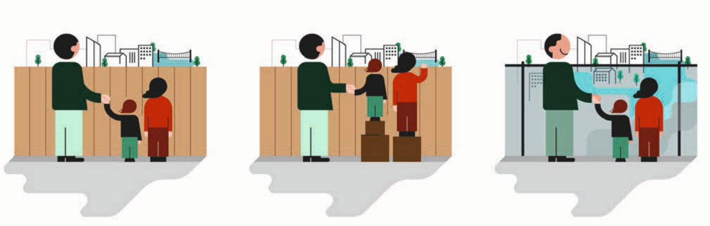
I projektgruppen ingår även forskare och designers med ett universellt designperspektiv och tillgänglighetsfokus. Målet är inte att utveckla en separat assisterande plattform för personer med funktionsnedsättningar utan en universell plattform som används av alla. Men den ska ha tillgänglighetsfokus och projektet säkerställer både att plattformen är inkluderande och designad "från kanterna”, med perspektivet att behov från personer utanför den dominerande normen ofta tillåter att nya innovationer upptäcks som i slutändan kommer alla till del.
Automatiserade dörrar, elektriska tandborstar, teknik för röstigenkänning och den suddiga bakgrunden som är bekant från Teams och Zoom, är alla exempel på innovationer som först designades för funktionsnedsatta personers behov.
Musical Cubes – Musikalisk samverkan, när teknik övar oss i att vara tillsammans
Gunnar Oledal, RISE Michael Schade, Chalmers Tekniska Högskola
Musical Cubes är en interaktiv ljudinstallation som ställer frågor snarare än ger svar. På ytan är det en lekfull teknisk miljö – åtta lysande kuber som reagerar på närhet, rörelse och ljud. Men under ytan handlar det om något mer: att förstå vad som händer när människor möts, samspelar och formar något gemensamt i realtid.
Genom att närma sig en kub aktiveras ljud och ljus som påverkar rummet. Flera personer kan spela tillsammans, eller samspela omedvetet – ljud uppstår i avstånd, i möten, i försök att förstå. Det går att lyssna till andra, följa efter eller skapa nytt.
Denna enkla installation påminner oss om något grundläggande i all systemförändring: att inget sker i isolering. All förändring är social, rytmisk och situationsbunden. Här konkretiseras det – inte som en föreläsning, utan som en upplevelse i kroppen.
Musical Cubes visar hur teknologi kan användas för att gestalta mellanmänskliga mönster. I ett samhälle där många strukturer separerar snarare än sammankopplar, blir installationen en övning i att vara tillsammans, att lyssna – och att skapa något nytt i samspel.
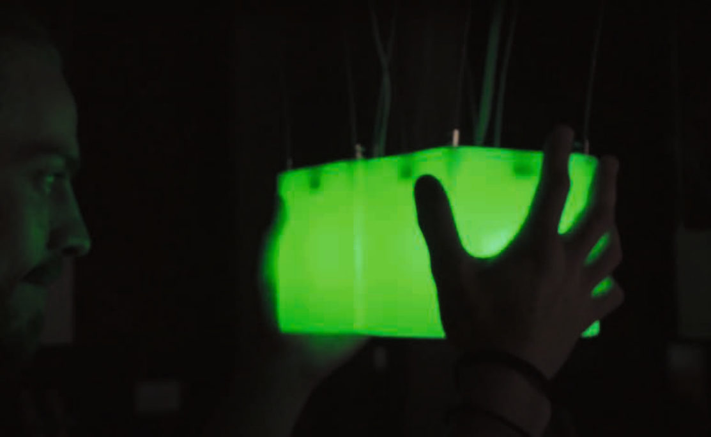
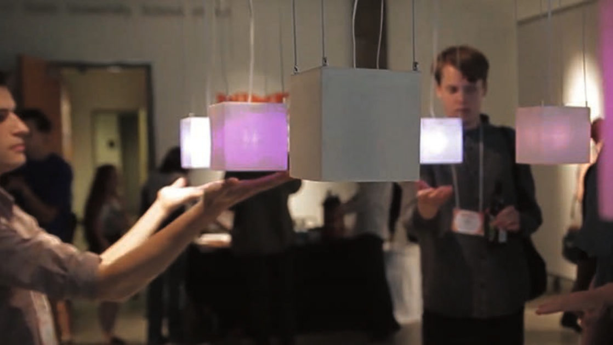
När biblioteket blir en upplevelse
Martin Törnros, Gabriella Di Feola, RISE
Det immersiva biblioteket är en samverkan mellan barn och unga, RISE och Kungsbacka kommun. Utifrån barn och ungas feedback skapar vi morgondagens och framtidens läsfrämjande miljöer genom immersiva upplevelser såsom VR, 360, AR, AI, ljud, ljus och bild. I projektet har vi en bred syn på begreppet läsfrämjande och undersöker berättande i alla dess former. Det kan handla om att ta del av befintliga berättelser men även om att skapa egna.
Kungsbacka kommun arbetar med invånarfokuserad dialog och medskapande. En del i detta arbete har därför varit att undersöka vad barn och unga som vistas eller bor i Kungsbacka kommun vill testa och undersöka i olika miljöer och vad som är viktigt nu och framåt för dem.
I Det immersiva biblioteket undersöker vi behoven djupare, idégenererar och skapar prototyper tillsammans med målgrupperna i kreativa workshops med immersiva upplevelser.
RISE forskning flyttar in i bibliotekets rum och tillämpas i den läsfrämjande verksamheten tillsammans med besökare och personal. Med utgångspunkt i bibliotekets roll att främja litteraturens ställning och öka intresset för bildning, upplysning, utbildning och forskning samt kulturell verksamhet – faciliterar vi dessa workshops. Här möts besökare, bibliotekspersonal, designers, utvecklare och forskare, och utforskar tillsammans de läsfrämjande tillämpningarna av immersiv teknik.
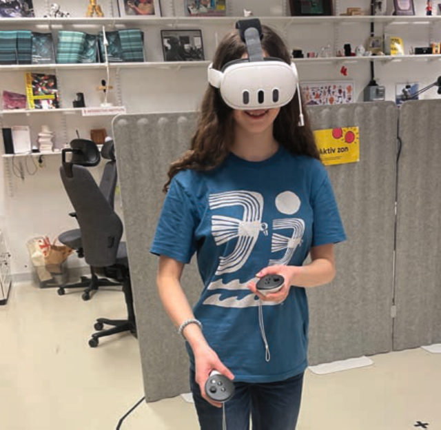
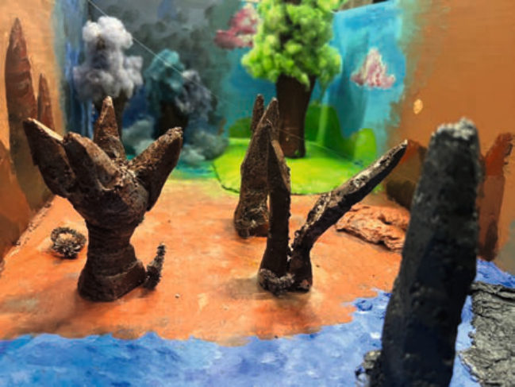
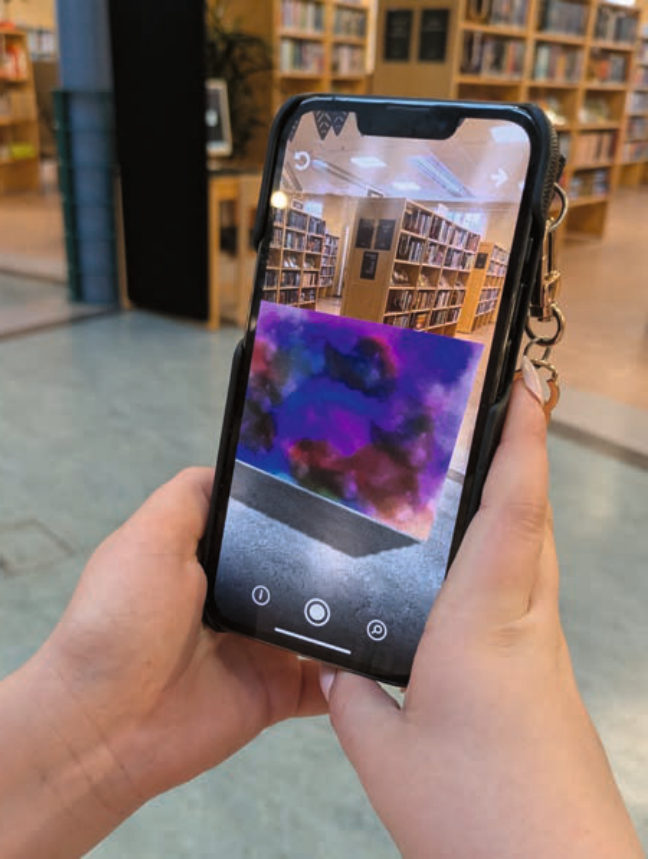
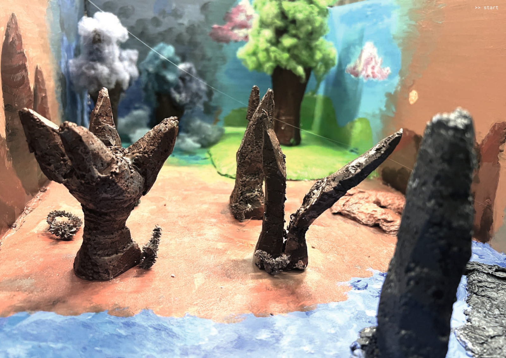
Den magiska planeten. Del av användartest med barn som del av att skapa en upplevelse på Kungsbacka Bibliotek. Att skapa i flera dimensioner väcker lust att upptäcka mer. Berättelsen skapad av vår testperson finner ni i kapitel 5 (sid 143), om berättelser som samhällskraft.